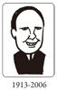

| 1日10分 ビジネスパーソンがよく使う英語名言 (中経出版) | |
| 今井 卓実 | |
| 中経出版 (2011) | |
1
日10
分 ビジネスパーソンがよく使う英語名言
Frequently Used Famous Quotes For Business People
今井卓実
本作品の全部または一部を無断で複製、転載、配信、送信したり、ホームページ上に転載することを禁止します。また、本作品の内容を無断で改変、改ざん等を行うことも禁止します。
本作品購入時にご承諾いただいた規約により、有償・無償にかかわらず本作品を第三者に譲渡することはできません。
本作品を示すサムネイルなどのイメージ画像は、再ダウンロード時に予告なく変更される場合があります。
本作品は横書きでレイアウトされています。
また、ご覧になるリーディングシステムにより、表示の差が認められることがあります。
はじめに
「名言」は言葉だけでなく、
その人の人生をよく知って使う
トーマス・エジソンの有名な言葉に、Genius is one percent inspiration and 99 percent perspiration.「天才とは1
パーセントのひらめきと99
パーセントの汗を持つ人」があります。何事も努力なくして成功はおぼつかない、ということを教えた言葉として人口に膾
炙
しています。このように、「名言」は言い古された言葉ではありません。いつの時代でも、だれもが「本当だよな」と思える重みのある言葉だからこそ、長く語り継がれてきたのだと言えます。
エジソンは1,300以上もの発明を行なって「発明王」とも呼ばれ、ＧＥの創業者でもあり、上記の名言は成功者の言葉としてとらえられる向きがありますが、彼は小学校を卒業していないということを知ると、この言葉のとらえ方が変わってきます。エジソンは小学校で、教師から理解力が足りないという理由で退学を強要され、このことが元で、父親からも見放され、母親の手一つで学業を積んできた、まさに努力の人でした。すると上の言葉も、１％のひらめきに重きがあるのではなく、99%
の努力にこそ価値があり、天才とは少しの努力ではなく、たくさんの努力を継続して積み重ねられる人を言うのだ、というように、この名言の真意がよく理解できます。
このように、名言はただ単に語り継がれてきた言葉だけをとらえても、その真意が明確に伝わってきません。この名言が述べられたいきさつや、この言葉を述べた人の人生を知ってこそ真の意味が理解できるのです。
ビジネスピープルと「名言」の効用
私は、34
年間英語で仕事を行ない、うち24
年間は米国で生活しながら仕事を行なってきました。この間、実にさまざまな人たちと英語でコミュニケーションをとり、一緒に仕事をしてきました。ある時、初対面のビジネスパーソンと話をしているときに、何気なくエジソンの上の言葉を使ってみました。するととたんに相手が打ち解けた様子を見せるようになり、会話がいっそう弾み、仕事もやりやすくなってきたのです。これも名言のおかげでした。
名言は、その名言を知っているというだけで、その人の教養がわかるだけでなく、その名言を吐いた人物の国の文化を尊重していることも同時に教えます。また、名言はオバマ米国大統領やビル・ゲイツ氏といった新しい人の名言だけではなく、たとえ15
世紀や17
世紀の古い人の名言であっても、瞬時に今によみがえり、その国の文化をよく理解していることを知らせるとともに、相手との距離をぐっと縮める働きもします。このことに気づいてからというもの、私はことあるごとに名言を持ち出して、相手との意思疎通をより緊密に図ることができるようになりました。
本書で取り上げた名言
本書では、全部で46
の名言を紹介し、実業家・政治家・作家・思想家を扱った「職業別編」と友情・成功・夢・仕事を扱った「テーマ別編」に分類しました。
本書で紹介した名言は、教養あるビジネスピープルなら誰でも知っているであろうと思われる名言です。そればかりではありません。私が実際に使ってみて、特にコミュニケーション上、相手との心情的な距離を縮めるのに役立ったものを選びました。本書で紹介した『名言』は今もよく使われるものばかりですので、安心してお使いください。
本書を一読され、皆さんのビジネスがうまくいけば著者として望外の喜びです。
2010年８月
ニューヨーク州ポートワシントンの寓居にて
今井卓実
CONTENTS
目 次
テーマ別名言集
本文デザイン／浦郷和美
本文イラスト／村山宇希
本書の効果的な使い方
「１日10
分」スキマ時間を自己投資！
どのStory から読み始めてもかまいません。「通勤」「昼休み」など、スキマ時間の10
分を自己投資して、名言の真意を理解し、英語で味わっていきましょう。
今日の名言
各Story のテーマとなる名言を紹介しています。英語の使い方や、言葉の強さを感じながら読んでみましょう。
ここに注目
在米20
年以上のキャリアと経験を持つ著者が解説。名言の意味だけではなく、その文化的背景や異文化間コミュニケーションの観点で、実務にも役立つ英語表現をふんだんに紹介しています。ビジネスシーンで実際に使うとしたら、というアドバイスも豊富なので、知識とともに、コミュニケーションのコツもつかみましょう。
音声をダウンロードして、英語を耳からインプット！
※音声データは中経出版のＨＰよりダウンロードできます。
story 01 創業者の失敗
★今日の名言
Failure is simply the opportunity to begin again, this time more intelligently.
─ Henry Ford
失敗は次なる挑戦のための機会にすぎない。次回はもう少し頭を使えばいいのだ。
──ヘンリー・フォード
Henry Ford
（ヘンリー・フォード）
フォード・モーターを築いたアメリカ人実業家。工場での製造に初めて組み立てラインを取り入れ、自動車の大量生産を可能にしたことで知られる。
ヘンリー・フォードの名言である。失敗にこだわることなく勇気を持って挑戦し続けるようにと励ましているのである。
ここで英語のfailureについて少し考えてみたい。我々日本人はfailure＝失敗と公式的かつ短絡的に解釈してしまいがちである。少なくとも私はそうであった。それがそもそものfailureである。
failureとは「ものの否定的な局面」を言うと解釈すれば、もう少しよく理解できるかもしれない。そして局面によっていろいろな方面に活用できる。
1
．行動のfailure
The campaign was afailure.
キャンペーンは結局むだだった。
2
．量的failure
Please be noted that there will be electricityfailure
in your area.
停電のお知らせ。
3
．健康、身体的failure
Thefailure
of his health made him retire necessary.
体調不良につき退職。
4
．経済的、資金的failure
Thefailure
of the bank
銀行の倒産
さて、実際に使う場合だが、こういう否定的な要素を持つ表現は十分な注意を必要とする。我々が彼の名言を実際のビジネスや職場で使うとすれば：
As Ford says, "Failure
is simply the opportunity to provide you ......"などというふうに使えば無難である。
さて、話はヘンリー・フォードである。
Ford Motor Company は規模こそ世界有数の大企業だが、個人会社である。会社はヘンリー・フォードとその家族に帰するものである。彼は「社員」に向かってあたかも自分の兄弟や子どものように優しく話しかける。
Tom, take it easy. It's not the end of the world. Try again, but think twice before you do next time.
トム、気楽にいこう。この世がおしまいになるというわけじゃないんだから、もう一度やってみよう。ただな、この次はちょっとだけ考えてから行動するんだぞ。
この彼の言葉には雇用者（Employer）と被雇用者（Employee）という利害が相反するような響きはない。むしろ、家族の成長を願う親の言葉の響きと言うべきであろう。
これは少し前の、日本の終身雇用型企業感に似ていないこともない。彼の人事管理に関する考え方は「福祉資本主義（welfare capitalism）」に集約されている。
1914年フォード社は1
日5
ドルの給与を提示して世間の耳目を集めた。世間一般の額の約2
倍である。これが奏功して、フォードにはデトロイト中の優秀な技師が殺到したという。フォード自動車の繁栄の礎となった。
1908年発売のＴ－型車（Model-T）は、運転しやすい、修理が簡単、手ごろな値段、がうたい文句であった。彼は自分の「家族」のために「家族」が購入できる車の製造を目指したのである。
社員が家族であるとする発想は、社員を大切にすると同時に会社の社員に対する個人生活の干渉という危険をはらむ両刃の剣である。後にこれは１９７０年代後半の「アイアコッカ事件」につながっていく。
今をさかのぼることおよそ40
年前、リー・アイアコッカ（Lee Iacocca）がフォード自動車の社長に就任し、以後、マスタング、リンカーン・コンチネンタル、マーク３など、フォードの名車を世に送り出した。フォード自動車の一時代を築いた人であったと言える。アイアコッカは、社長を８年務め、利益もうなぎのぼりのときに突然解雇された。理由は彼がフォード家の人間ではないからだと世間はうわさした。アイアコッカはこう言った。
If a guy is over 25% jerk, he is in trouble. And Henry was 100%.
もしもそいつが25
％嫌なやつなら、問題児だな。ヘンリーは25
％どころか100
％さ、箸にも棒にもかからなかった。
このヘンリーはヘンリー・フォードの孫に当たるHenry Ford II である。初代Henry Fordは偉大な事業家だったが、後継者育成についてはfailureであった。
story 02 25 ％の努力
★今日の名言
The average person puts only 25% of his energy and ability into his work. The world takes off its hat to those who put in more than 50% of their capacity,and stands on its head for those few and far between souls who devote 100%.
─ Andrew Carnegie
並の人間は自分の能力と精力のわずか25
％くらいを仕事に注ぎ込む。自分の能力の50
％を傾注する人には世間は脱帽するし、まれに100
％専念するような人がいれば、逆立ちをする。
──アンドリュー・カーネギー
Andrew Carnegie
（アンドリュー・カーネギー）
鉄鋼王として大成功を収め、巨万の富を築く。後に多くの音楽家が演奏したカーネギー・ホールを建設する。ここで演奏することが一流の証明と言われる。
四六時中仕事のことを考えているようでも、実際に仕事に打ち込んでいるのは25
％程度というのは、過去の経験でもよくわかる。50
％も仕事に費やしているとすれば精神の平衡を失ってしまうだろうと考えるのは、やはり自分が怠惰なせいもしれない。
たとえ名言とはいえ、我々のような平凡な人間がこのような言い方をすれば、これはひんしゅくを買うに決まっている。遊びに転用するのが一番よい。力の入れ方が逆になるからだ。
The average golfer swings by putting 100% of his power to the golf club; single handicapper, 90% and pros only 80%.
通常のゴルファーは100
％の力を込めてゴルフクラブを振り回す。シングルハンディーの人は90
％、プロは80
％でほとんど力が入っていない。
ここで、英語で肩の力を抜く表現を見てみよう。relax、ease、take it easy などの言葉が日常頻繁に使われる。例えば、
A few days in the country will relax you.
2
、3
日、田舎でゆっくりしておいで。
His face relaxed into a smile.
彼の表情が和んで微笑になった。
They relaxed into friendly conversation.
彼らはだんだんと親しみやすくなり、気軽に話し合うようになった。
Take it easy.
気軽にやれ。（Good bye.の代わりに使われることも多い）
Easy does it.
肩の力を抜いてゆっくりと。（この言葉は私のゴルフの先生の口癖である）
さて、アンドリュー・カーネギーの本拠地ピッツバーグはペンシルベニア州の西側に位置し、モノンガヘラ川、オハイオ川、アレゲニー川が合流する三角州に生まれた美しい工業都市である。19
世紀後半から20
世紀初頭にかけて米国の「鉄鋼王」とうたわれた彼は、この町を出発点とした。
貧しいスコットランド人の両親とともに1848年新天地を求めて米国ペンシルベニアに移民してきた。彼はその移民の年、13
歳で綿工場に働きに出る。その後ピッツバーグの「オハイオ電報会社」にメッセンジャーとして就職した。この会社で彼は「自分の能力の50
％」を仕事に注いだものと考えられる。メッセンジャーの仕事に飽きたらず電信音を耳で聞き分けるまで聞き入り、最後には信号音を聞いただけで電文を解読できたという。努力の人である。
彼は、その後「ペンシルベニア鉄道」に職を得る。そこで生涯の師、トマス・A
・スコット（Thomas A. Scott）に出会い、鉄道経営のいろはを教わることになる。特に諸経費については厳しい指導を受けたと言われている。カーネギーもその期待に十分こたえたのである。
スコットは彼に株取引の手ほどきもした。スコットが自分の部下に株売買の指導をすることはなんら非難されるべきことではない。問題は銘柄の選定がペンシルベニア鉄道の関連会社であったという点である。一種のインサイダー取引である。彼は「ペンシルベニア鉄道」関連の「寝台車製造会社」株をスコットのために代理保有していた。その見返りにその株の分け前にあずかる。また、トム・スコットの下で「寝台車製造会社」買収に力を発揮する。この買収は後に大きな利益を鉄道会社にもたらす。彼は個人的にも莫大な財を築く。1901年、彼は66
歳で引退し、会社はその後U.S. Steelとして後世に引き継がれてゆく。
カーネギーのもう一つ側面を忘れてはいけない。慈善事業である。
その一つ、ニューヨーク市の57 丁目６番街・７番街の間に有名なカーネギーホールがある。内装も華美にすぎず、音響効果のすばらしさは市内随一である。彼のおかげでニューヨーク在住の我々は世界最高の音楽演奏を気軽に楽しむことができる。彼の50 ％の努力の賜 物 であると同時に、彼のrelaxationの一方法であったに違いない。
story 03 決定を恐れない
★今日の名言
Management is doing things right, leadership is doing the right things.
─ Peter Drucker
経営とはなすべきことを正しくなすことであり、リーダーシップとは正しくなすべきことをなすことである。
──ピーター・ドラッカー
Peter Drucker
（ピーター・ドラッカー）
オーストリア生まれの米国の経営学者。『産業人の未来』を著して一躍脚光を浴び、その後も多数の経営に関する著作を著して「経営学の神様」と称される。
経営学の神様と言われたピーター・ドラッカーは、我々団塊世代のサラリーマンには懐かしい人である。そもそもmanagementとは何か。一生懸命に読んだ割には何も頭の中に残っていない。しかし左の名言で「経営のなんたるか」をすべて理解しているのなら、彼は天才である。凡夫の私には到底理解できない。困ったときはWebster's New World Dictionaryに尋ねる。
manage: originally to train（a horse）in his paces
とある。語源的にはイタリア語の"maneggiare"（to handle）で、一般的にhandle a horseの意味で使われる。ラテン語の"manus"（hand）からの派生とも考えられる。要するにmanagementとは「馬を操る術」のこと。どう猛な野生の馬を操り、訓練し、生産的な仕事ができるようにするというのが原義らしい。
さて、経営とは一言で「人、物、金」の効果的な管理であると会社の「管理者教育」で教わったことがある。managementとは「じゃじゃ馬ならし」なのだという考えを念頭に置いて、こんな言い方はどうだろう。
Management is to manage limited human and material resources, time and money, all of which run wild if not trained properly.
経営とは、限りある人や物などの資源、時間と金を管理することであり、これらはいずれもうまく調教しないと野生のままに赴くものである。
世界の人々とビジネスをしたり、海外で組織を管理・監督する場合、必ずこの問題に直面する。親の国で生まれ、育ち、仕事を得、家庭を持ち、生涯を終えることができれば、それは幸せなことに違いない。しかしながら好むと好まざるとにかかわらず、我々は現在、すべての人がそういう幸せを享受できるわけではない。どこかで、まったく違った考えや文化の人々と接し、折衝し、あるいは、ともに生きていかねばならない運命にある。さて、
Bad decision is better than no decision.
というのを米国のmanagement seminarで最初に教わったことがある。もう30
年も前の話だ。なぜ、「悪い決定が何も決定しないよりよい」のかまったく理解できなかった。「この件については皆でじっくり考えて最適の案を出しましょう。今日はこのへんで会議を終わります」というのは好ましくない。
実際に経験してみると、骨にしみるほどよく理解できた。決定を明日に残しておくと、「じゃじゃ馬」は進むべき方向を見失うのである。左か右か進むべき方向を示してほしいのだ。結果的に方向が間違いであったとしても、それはそれでいい。左を右に、右を左に正せばよいのだ。
No decisionの反動はすぐに表れる。
He is too good to be a manager.
彼はお人好しすぎて、管理者には不向きだ。
She did not tell me what to do.
彼女は物事をはっきりと言ってくれないんだ。
I like him but do not respect him as a manager.
個人的には彼が好きなんだけどね、上司としてはどうも。
このようにささやかれたらおしまいである。少なくとも失地回復にはそれなりの時間を必要とする。以心伝心ということは期待しないほうがよい。特に米国ではこの傾向が強いように思われる。そして、米国の会社の管理職は毎日のようにこの"decision making"に悩まされていると言っても過言ではない。
Making a good decision is a crucial skill at every level.
それぞれの階層においてそれなりの良い決定ができる能力が求められている。
これもピーター・ドラッカーの言葉である。決定をすることは一人管理職の占有物ではなく、あらゆる職階、階層において必要とされているのだと、その重要性を敷
延
する。
ピーター・ドラッカーが言うようにあらゆる職階・階層がそれぞれの適正な決定をしなければならない。そこであるとき、決定を逡巡していたあなたを「管理職の資格なし」と決め付けていた連中にこう尋ねてみるのだ。答えに窮するに決まっている。遠慮は無用である。文化の違いや、育った環境の違いで集団の中での誤解はつきものである。誤解を恐れずに言うことである。
story 04 ３種のワイン
★今日の名言
Even more importantly, it's wine, food and arts.
Incorporating those three enhances the quality of life.
─ Robert Mondavi
より重要なことはワイン、食事、芸術です。
これら三つの要素を総合的に一体化すれば、人生はより質の高いものになります。
──ロバート・モンダビ
Robert Mondavi
（ロバート・モンダビ）
世界の高級ワインとして多くの愛飲家の支持を集めるカリフォルニアワインの創始者。カリフォルニア州ナパバレーに自分のワイナリーを持つ。
ロバート・モンダビは1966年にカリフォルニア州ナパバレーでワイナリーを創業、米国のワインを世界的なブランドに育てた人である。
米国やヨーロッパに仕事で出張すると現地のビジネスパートナーと食事をする機会が多い。個人的な経験で言えば、若いころは海外にいるときでも食事はできるだけ日本人同士で食べるほうがよかった。
大都市へ行けば世界中どこでも日本食レストランの一軒や二軒は見つかるものである。メニューも一応そろっているし、魚介類も新鮮である。第一、料理の説明をしてもらう必要がない。飲み物はビールと決まっている。銘柄は「お任せ、冷たいの」ですむ。こんな気楽なことはない。
今にして思えば、米国やヨーロッパで地元のレストランに気後れしたのは、ワインコンプレックスのようなものがあったのではないだろうか。実際ワインの選択は難しい。どこかで克服をしなければならない。ワインのことは知っておいたほうがいい。
典型的なニューヨークのレストランでの光景。
席に案内されるとネクタイを締めたウエイターがやってくる。「お食事の前にバーからお飲み物をお持ちいたしましょうか」などと、たいていは少し気取ったしゃべり方をする。こんな具合だ（訳は不要だろう）。
"Would you like to have some drinks from the bar before you start your dinner?"
"Yes, I would like to have some wine."
"Red or white?"
"White, please."
"We have Sauvignon Blanc, Pinot Blanc, Chardonay, Pinot Grigio, and Fume Blanc."
"Fume Blanc?"
"Sir, it's Robert Mondavi Fume Blanc 2006. It's excellent. Would you like to try it?"
ウエイターがボトルを持ってくる。栓を抜いてティスティング用に少し注ぐ。
"It's good. I'll take it."
"Yes, sir."
人にもよるが、通常はワイン１本で４人がけっこう楽しめる。また、食事の種類によってワインを選ぶのが普通だが、４人ほどの会食の場合は、誰が何を食べるかあまりわからない。そういう折りには、
"May I choose wine this evening?"
「今夜は僕にワインを選ばせてくれないかな」などと言って皆の同意を得、自分の好きなワインを選ぶとよい。
ウエイターを呼び、次のように言う。
"We would like to try red wine this time."
"Yes, sir. I will bring a wine list, sir."
ワインはそれほど簡単ではないが、ここではソムリエになるわけでもワインの本を書くわけでもない。ただレストランで通常のおいしいワインが簡単に楽しめればよいのだ。カリフォルニアの赤ワインについて言えば大まかに3
種類ほどのぶどうの品種を覚えておけばよい。
Cabernet Sauvignon, Pinot noir, Merlot
代表的な上記ぶどうの品種に醸造所（Winery）の名前と醸造年が入るだけである。あとは経験である。これがうまいと思ったものを覚えておけばよい。少し自分に投資してみるのもよいだろう。赤、白それぞれのワインが醸造所、醸造年によって味が少しずつ（あるいは大きく）変わるので、よしあしは自分で決めるしかない。
ここでワイン恐怖が取り除かれると、会食も楽しくなるというものである。余裕が出てくると仕事も必ずうまくいく。モンダビは食事とワインと芸術の三位一体説を述べているわけだが、この芸術の話というのはビジネスの社会では話題になりにくい。絵画、音楽、文学、どの分野を取るにしても、相当の長い時間をかけて理解しないといけない。一般にはよくスポーツの話題が多い。アメリカ人とは特に野球、フットボール、バスケットボール、ゴルフの話をしていればまず間違いない。必ず仲間に入ってくる。
質の高いワインと食事と芸術が生活や人生に潤いを与えるのは事実だが、度がすぎると大変である。
This is what I think is very essential...moderation can be good for you.
─Robert Mondavi
やはり物事には節度が肝要かと存じます。─ロバート・モンダビ
story 05 リスクを冒すことの意味
★今日の名言
Take risks. Ask big questions. Don't be afraid to make mistakes. If you do not make mistakes, you are not reaching far enough.
─ David Packard
危険を冒して大切な質問をしなさい。失敗を恐れてはいけません。失敗をしないということは自分の目標が十分に高くないことです。
──デイビッド・パッカード
David Packard
（デイビッド・パッカード）
世界的なコンピューターメーカーのヒューレット・パッカード社の共同創始者。パートナーはウィリアム・ヒューレットである。デイビッド＆ルシール・パッカード財団の創設者。
世界的コンピューターメーカーのヒューレット・パッカード社創設者の一人、デイビッド・パッカードの言葉である。
含蓄のある名言ではあるが、これを一般の生活の場面でどのように使うかを考えると、なかなか難しい。
友人や会社の同僚にいきなり、
Take risks. Do not be afraid to make mistakes.
と言ったところで、相手には何のことかさっぱりわからないはずだ。
What are the risks? What is the definition of mistakes?
リスクとは何ですか。過ちを定義してみてください。
と次々に質問が返ってくる。まずriskとは何かを理解する必要がある。ここでは「risk＝危険、恐れ」という短絡的な翻訳癖からは脱却する必要がある。ビジネスの一般的な教科書を見るとriskを、
The probability that there is threat
The probability that there are any vulnerabilities
The potential impact to the business
とおよそ３種類に分けている。「危機に瀕する可能性、危機に陥りやすい可能性、ビジネスに大きな影響を与える可能性」があることである。
それでは、現在自分が置かれている職場や環境の中で、「危機に瀕したり、仕事に大きな影響を及ぼしたりするかもしれない」事柄を十分に考えて、それでもあえてriskを取るとはどういうことなのか。それは
Open yourself to change. Face the new environment.
「変化を受け入れ、新しい状況や、変化に対してひるむことなくチャレンジしなさい」ということになりそうである。
さて、一般の実社会では事はそう簡単ではない。新しいことに挑戦しても、よい結果が出ないときには責任を取らされるのが世の習いである。ましてや、ビジネスの社会である。結果が悪くても、彼はリスクを勇敢に取ったのだから、これは表彰に値するというような会社や組織があればお目にかかりたい。
riskを取ることを奨励、推奨するが、同時にriskをmanageする能力も必要とされるのが現代社会である。とすれば、一歩進んで以下のように言うことができる。
Take risks and manage them.
リスクを冒しリスクを管理せよ。
そしてまた少し先に進む。
Risk management is the process to identify and manage the threat that could severely impact or bring down organization or business.
リスク管理とは、組織や事業に深甚なる悪影響を与え、滅ぼしてしまうような危機を認め、管理する工程のことである。
というふうに理解していけば、パッカードのように堂々と同僚、後輩の前で胸を張ってこう言うことができる。
Take risks, gentlemen!
経営・管理とは、つまるところ人・物・金を経営・管理することである。この原則に沿って言えば、Risk managementとは簡単に言えばhuman resources、facility、money（financial asset）「人的資源・設備・金」に対するそれぞれのrisk要因を分析して、対案を立てることにほかならない。
海外で仕事をする上で日本人にとって一番難しいのが、human resourcesを含むlegal risk かもしれない。あらゆることがlegal issueになりうる米国においてはこのことはいくら強調してもしすぎることはない。
商売ではかなりの商才を発揮し、売り上げを何倍にもできる能力ある人間が、まったくつまらない発言や行動で訴えられ、志半ばで帰国を余儀なくされたり、さらに悪い場合は、帰国もできず裁判の結果をただ待つだけで仕事どころではないというケースを何度も見てきた。要は、何がリスクかを判断し、対策を十分に立てた上で、Take risks, everyone.と言うべきである。これに続く、
Ask big questions. Don't be afraid to make mistakes.
についてもまったくrisk と同様のことが言えるのではないか。「過ちを犯しても、二度と同じ過ちを繰り返さないようにするためにも、そこから教訓をくみ取る重要な質問をするのだ」ということである。
story 06 経営者のあり方
★今日の名言
I want all the employees, who are so stubborn, to know that I own the Stork Club and how I want things done, must be done that way. I will not stand anyone who bucks me. When anyone thinks they can do things their way and not mine, they can do their thinking elsewhere. I want my orders carried out.
─ Sherman Billingsley
頭の固い従業員諸君にお断りしておきますが、ストーククラブは私が所有しています。すべての仕事は私の流儀に従ってもらいます。従業員の反抗は一切認めません。私流のやり方ではなく、ほかのやり方でできると考える人は、すぐに出て行ってください。私の命令は絶対です。
──シャーマン・ビリングスリー
Sherman Billingsley
（シャーマン・ビリングスリー）
米国の高級ナイトクラブ「ストーククラブ」の創設者。ここは、フーバー大統領、ケネディ大統領ほか、ヘミングウェイやチャップリンなどの著名人が多数訪れたことで有名。
ニューヨークにあったストーククラブという一流ナイトクラブのオーナー経営者の従業員に対するメッセージである。これをビジネスパーソンの名言と呼ぶには少々語弊があるかもしれないが、我々英語を外国語として学ぶ人間にとって、さまざまな示唆に富んだ言葉であるので、あえてここで取り上げることにした。彼流に言えば、著者は間違っているかもしれないが、絶対だ。
さて、私の経験に基づいて話を進める。
最初に米国の法人で管理職になったころを思い出すと同じような状況でmessageやnoticeを書けば以下のようになったと思われる。新任の挨拶である。
Fellow employees, let me introduce myself. My name is Ted Imai and I am a newly assigned manager here in Philadelphia. I am so happy to be able to work with you. Since I am new here, I do not know much about business rules and regulations here. Please help me and I know I will learn a lot from you. Thank you.
皆様、自己紹介させていただきます。このほど新任のフィラデルフィア支店長を拝命いたしましたTed Imaiです。当地にも当地での仕事にもなにぶん不慣れであります。そこで、皆様にいろいろとご協力をお願いする次第です。毎日勉強のつもりで仕事に励みます。なにとぞよろしくお願いいたします。
事業規模の差や、時代の差を超えてシャーマン・ビリングスリーもテッド・イマイも組織の長として従業員にそれなりのメッセージは伝わっているはずである。決定的な違いは、組織のリーダーとして強い意志を持って組織を引っ張っていこうとしているのか、まず組織に適合してそこから徐々に組織を統率していこうとするかである。明らかに前者は米国的であり、後者は日本的であると考えられる。
私は米国以外の例えばヨーロッパや、中国のビジネス社会の経験がないので明確にはわからないが、「異文化間ビジネス」社会では米国の流儀のほうが有効なのではないかと考える。これはどちらが経営者として正しいか、間違っているかということではなく、ビジネス風土やビジネス流儀の問題であると考えられる。
米国や「異文化ビジネス」環境下では、言いたいことをはっきりと言う、仮にも組織で長に指名された以上遠慮をすることなく、自分に自信を持って堂々と事に当たるべきである。これはあくまでも流儀の問題であるからこれを日本で適用すると、とんでもないことになるのは火を見るより明らかである。
数十年も前にした経験は汗顔の至りであるが、思えばそれも重要な経験であった。今なら、さしずめ以下のように言い換えるかもしれない。
Hello friends, I am Ted Imai and I am the newly assigned manager here in Philadelphia, which I have been long dreaming of. Once it was the capital of the USA and now is the city of brotherly love. I also heard a lot about people of Philadelphia for their friendliness. I have confidence in business and I have my own way of doing business, but please remember that I am always open to your opinions and ideas. I am happy to be able to work with you. Thank you.
皆様、このほど新任のフィラデルフィア支店長を拝命いたしましたTed Imaiです。このフィラデルフィアは私が長いこと夢見てきた地であります。かつてここはアメリカの首都であり、今は兄弟愛の町です。フィラデルフィアの人々は親切であるとのうわさも何度も耳にしております。私はビジネスには自信があり、私の流儀もあります。しかし、私はいつでも皆様のご意見には耳を傾けます。一緒に働けることをうれしく思います。どうか、よろしく。
これで十分である。後は仕事の実績で人を引っ張っていけばよい。
シャーマン・ビリングスリーは1896年、８人家族の末っ子として、オクラホマの貧しい農場に生まれた。時代はすでに西部開拓のためのほろ馬車隊の活躍が終わりを告げたころである。
しかしながら、より豊かな土地や職業を求めて、次々に住居を変えていくアメリカ人の習性は簡単には変わらない。ビリングスリー一家もその例外ではなく、オクラホマの田舎から、オクラホマ・シティー、ワシントン州シアトル、ミシガン州デトロイトを経てニューヨーク州ニューヨークに移住してきた。彼らにとって「より豊かな仕事」とは酒の販売であった。時はまさに禁酒時代である。個人飲用や薬用は許されていたが、酒の販売を禁じた州もあった。いわゆるDry Stateである。一家はこれらdry stateで薬局を開業することによって実質的な酒類販売業を営んだ。そして次々に州を移動していった。
シャーマンがニューヨーク・マンハッタンのグランドセントラル駅に降り立ったのは1920年５月のことである。全米禁酒法が施行されたのが前年1919年１月である。彼は今までの経験をニューヨークで最大限に生かすことによってそれなりの成功を収めた。
同時に彼は薬局事業から「クラブ」事業に転業する。きっかけとなったのは、マフィアの業界への進出と無縁ではなかったと推察できる。「会員制ストーククラブ」を発足させ1960年初頭まで大いに繁盛させ、その会員に有名人ばかりを集めた。ニューヨーク「カフェ社交界」を誕生させたのである。顧客会員にフランク・シナトラ、アルフレッド・ヒッチコック、J ・F ・ケネディ、アーネスト・ヘミングウェイ、ジョー・ディマジオ、マリリン・モンローなど各界の名士を数えている。冒頭の文章はこのクラブの経営方針であった。
story 07 人民の、人民による、人民のための政治
★今日の名言
Four score and seven years ago our fathers brought forth on this continent, a new nation, conceived in Liberty, and dedicated to the proposition that all men are created equal.
─ Abraham Lincoln
87
年前、我々の祖先は自由という概念に胚胎し、人間はすべて平等な存在として創造されたという強い信念に支えられてこの大陸に新国家を誕生させた。
──アブラハム・リンカーン
Abraham Lincoln
（アブラハム・リンカーン）
米国第16 代大統領。南北戦争（1861-1865）で南軍を破り、奴隷解放を実現した。「人民の、人民による、人民のための政治」という彼の言葉は、民主主義の原理を表すと言われる。
1863年アブラハム・リンカーン大統領のゲティスバーグでの演説の導入部である。ビジネスパーソンとしてこの導入部は暗記しておくとどこかで必ず役に立つ。
ただし、仮にFour score and seven years agoをそのまま日常の会話に使うと失笑を買うこと間違いなしである。「まさしく諸行無常の感でござる」と古風に聞こえるに違いない。一般のアメリカ人でも現在、左のような言い方はしない。皆小学生のころの教科書に出てくるリンカーン演説の一部として覚えているので、その意味がわかるという程度である。
Eighty seven years ago, our fathers founded a new nation, with the strong belief that all men are created equal.
というように言い換えると、もう少し意味内容がはっきりしてくる。1863年をさかのぼること87
年とは、1776年のことである。これはトーマス・ジェファーソン（Thomas Jefferson）起草の独立宣言（United States Declaration of Independence）のことだとわかる。
We hold these truths to be self-evident, that all men are created equal, that they are endowed by their Creator with certain unalienable Rights.
私たちは、人は皆平等に創
られ、主により分かつことのできない権利を与えられているという事実を自明のことと考えている。
リンカーンの演説の原点はここにある。リンカーン大統領率いる北軍（union）はトーマス・ジェファーソンの根本思想、アメリカ建国の精神「人間は平等」であるという信念に支えられて南北戦争を戦ったのである。アメリカ植民地に対する英国本国の「不平等な扱い」に反抗して独立を獲得した精神は、その80
数年後に国内の不平等の象徴、黒人奴隷問題に向かった。
そして、歴史が示すように、これは黒人奴隷を主たる労働力として繁栄していた南部諸州の利害と真っ向から衝突した。金銭を出して買った黒人奴隷を連邦政府命令によって解放するかどうかは、南部の人々にとっては大きな問題であった。すでに経済的に北部諸州を上回りつつある南部が連邦政府内で大きな力を持つようになるのを北部諸州は恐れ、同じように奴隷使用権をはく奪され、経済的基盤を奪われ、政治的に力を失ってしまうことを南部諸州は恐れた。
さて、南部諸州も不思議なことにトーマス・ジェファーソンの精神をそのよりどころとした。1789年に決議起草されたThe Kentucky Resolutions が彼らのよりどころである。
Resolved, that the several states composing, United States of America, are not united on the principle of unlimited submission to their general government.
アメリカ合衆国の個々の州は連邦政府の規則に無制限に従うということではない。
連邦政府の一員といえどもすべてその命令に服従する必要はない。個々の州の既得権はそれなりに尊重されるべきである。この観点からすると南北戦争は、思想的にはトーマス・ジェファーソンを親とした双子の間の戦いであったと言えるかもしれない。
the government of the people, by the people, for the people, shall not perish from the earth
「人民の、人民による、人民のための政治はいかなることがあろうともこの世界から消滅することはない」というあまりにも有名な言葉で、リンカーンのゲティスバーグ演説は終わっている。戦争が終結するまでまだ１年余りを残していた。
およそ150
年を経た今日でも我々は彼のスピーチに多大な感銘を受けている。現に日本の高校や大学で彼のスピーチは暗唱の対象になってはいないだろうか。
リンカーンの精神は後のケネディ大統領、公民権運動指導者のマーチン・ルーサー・キング牧師へ脈々と受け継がれた。くしくも、この演説にかかわる３人が凶弾に倒れたのは歴史のいたずらだろうか。
story 08 自由の守護者
★今日の名言
We observe today not a victory of party, but a celebration of freedom
symbolizing an end, as well as beginning,
signifying renewal, as well as change.
─ John F. Kennedy
我々は本日単なる党の政治的勝利を祝うためにこの場にいるのではない、真の意味での自由を祝福するためにいるのである。それは終
焉
と門出を象徴し、改変と改革とを重要ならしめるものである。
──ジョン・Ｆ・ケネディ
John F. Kennedy
（ジョン・Ｆ・ケネディ）
米国第35 代大統領。第二次大戦後米国・ソビエト連邦間で勃発しそうになった核戦争を回避した立役者。
ジョン・Ｆ・ケネディの大統領就任演説（1961年）は米国大統領演説史上アブラハム・リンカーンの演説に匹敵するものと考えられる。
ケネディ大統領はこの選挙で得た民主党の勝利を否定しているのではない。彼は党派を超えた勝利を宣言している。このように歴史に残る名スピーチから我々は一つ一つの字句よりも、レトリックを学ぶべきかもしれない。ここでは対句が美しく、強い言葉で使われている。
Ａ: a victory of party
Ｂ: a celebration of freedom
Ａ: an end
Ｂ: beginning
Ａ: renewal
Ｂ: change
We dare not forget today that we are the heirs of that first revolution. Let the word go forth from this time and place, to friend and foe alike, that the torch has been passed to a new American-born generation in this century, tempered by war, disciplined by a hard and bitter peace, proud of our ancient heritage and unwilling to witness or permit the slow undoing of those human rights to which this Nation has always been committed, and to which we are committed today at home and around the world.
私たちはこの国の最初の革命の継承者なのだということを決して忘れない。今、この場所から世界の友好国、非友好国とを問わず次の言葉を送ろう。松
明
はこの世紀に生まれ、戦争にさらされ、苦くつらい平和に鍛えられ、母国の先祖に大いなる尊敬の念を抱いている新しい世代に引き継がれたのだと。また我々はこの国が誕生以来、母国でもまた世界のあらゆる地域においても約束してきた人権を緩やかに蹂
躙
するような行為を見過ごすことはしないと。
ケネディ大統領が1960年当時、米国の代表的エリートであったことは論を待たない。しかし同時に彼の祖父がアイルランド系移民としてマサチューセッツに渡ってきたという事実は大きい。いわゆるオランダ系・イギリス系のold moneyの家系に生まれたわけではない。米国で政治家として頂点を極めるまでの辛苦と努力とは想像に難くはない。彼がそれなりの辛酸をなめ、米国の将来を思うとき、どうしてもこの国の出発の意味「自由」を問わねばならなかった。国内的には「人種差別」からの自由であり、国際的には「独裁政治」からの自由、開放である。
In the long history of the world, only a few generations have been granted the role of defending freedom in its hour of maximum danger. I do not shrink from this responsibility ─ I welcome it.
長い世界の歴史の中で、一握りの世代だけが自由が最大の危機に瀕したときに、その擁護に当たることができた。私はその責任から逃れようとは思わない。むしろ喜んでその挑戦を受けよう。
この節でも「自由」こそは世界の人々がたとえ命を賭しても守らなければならないものだと訴えている。ここには「門閥制度は親の敵でござる」と言ったときの福沢諭吉の決意に通じるところがあるかもしれない。ケネディは「反自由は国の敵でござる」と言っているのだ。そして、この名演説は次の人口に膾
炙
している言葉へと続いていく。
And so, my fellow Americans: ask not what your country can do for you ─ ask what you can do for your country. My fellow citizens of the world: ask not what America will do for you, but what together we can do for the freedom of man.
我が同胞の皆さん、あなたのために祖国が何をなし得るかを問うのではなく、あなたが祖国のために何をなし得るかを考えてください。世界の同胞の皆さん、アメリカが貴国のために何をなし得るかを問うのではなく、人類の自由を守るために共に何ができるかを考えようではありませんか。
story 09 白馬にまたがる大統領
★今日の名言
The greatest leader is not necessarily the one who does the greatest things. He is the one that gets the people to do the greatest things.
─ Ronald Reagan
偉大なリーダーとは偉大なことをなし得る人ではない。むしろ、周囲の人に偉大なことをさせる人である。
──ロナルド・レーガン
Ronald Reagan.
（ロナルド・レーガン）
米国第40 代大統領。俳優から身を起こし、カリフォルニア州知事から大統領に上り詰めた。「強いアメリカ」の再生に力を尽くした。
米国第40
代大統領ロナルド・レーガンの言葉である。管理者教育のセミナーに参加しているような気分になる。
A manager is not the one who does accomplish his job, but the one who gets his staff to accomplish the job.
などと言い換えると、教科書に書いてあるような文になる。相手や第三者を通して事を成し遂げることが管理者であるならば、良い営業マンとはさしずめ以下のように定義できるかもしれない。
A good sales person is not the one who sells their products to a customer, but the one who lets the customer feel like buying from him.
立派な営業マンとは消費者に売りつける人のことではなく、客に彼から買う気にさせる人のことである。
これは営業セミナーを主催するときに使える言葉だ。さて、レーガン大統領がその昔、ハリウッドの映画スターであったのは誰しも知るところである。イリノイの小さな町で育ち、地元の大学を出た後ウィスコンシンでラジオ局のアナウンサーとしての経験を積み、やがて映画界に入って頭角を現した苦労人である。映画俳優の組合の役員も務めた。
また、特筆すべきは彼がＧＥ社の宣伝番組を自ら担当、出演し、コマーシャルを自分で考え、演説をしたという事実である。アメリカ資本主義の精髄を彼はここで徹底的に学んだと考えられる。
その後、政界に転身、第33
代カリフォルニア州知事に選出された。映画関係者からカリフォルニア州知事というコースは彼が先
鞭
をつけた。1981年１月米国大統領に選出され、２期８年、1989年１月まで大統領を務めた。
The greatest leader is not necessarily the one ...
という言葉の中には、彼の人生の重みが詰まっているように思われる。彼自身が偉大なリーダーであった。私生活では、最初の結婚に失敗、1948年に離婚を経験するが、1952年、後の大統領夫人になるナンシー・デイビスと結婚、おしどり夫婦の誉れが高い。"Mommy" "Ronnie"と生涯お互いに呼び合った。
Whatever I treasure and enjoy... all would be without meaning if I don't have you.
どれほど自分が楽しんだり、喜んだりしたところであなたがいなければ何の意味もない。
と大統領はナンシー夫人宛の手紙に書いた。
一方、ナンシー夫人はアルツハイマー病のためにレーガン大統領が入院している間、彼の下着をベッドに忍ばせて眠ったという。
She slept with one of his shirts to be comforted by his scent.
彼女は夫のシャツを1
枚抱き夫のにおいにくるまって眠った。
また、彼にはもう一つの面白い名言がある。
Politics is supposed to be the second oldest profession. I have come to realize that it bears a very close resemblance to the first.
政治（家）というものは世界で2
番目に古い職業と考えられているが、最近では、政治も一番古い職業とよく似ていることがわかってきた。
oldest professionとはprostitution（売春）の別名である。やはり偉大なリーダーも長い政治家生活の中で疲れを感じたのかもしれない。人に選ばれて、人に尽くし、お金を稼ぐという政治家としての自分の姿が、売春婦の姿と重なったのか。あるいは、1960年代に盛んになりつつあった米国の公民権運動と性差別運動が政治問題化したと言っているのか、この言葉だけでは判断できない。
さて、時折アメリカ人は何によって考えどのように行動の規範を決定するのだろうと考えることがある。やはり、独立宣言の主題、
We hold these truths to be self-evident, that all men are created equal ...... unalienable Rights, that among these are Life, Liberty and the pursuit of Happiness.
「人間は神の下に平等で、生命と自由、幸福の追求は分かつことのできない権利である」という意識だろうか。レーガン大統領はいつもカウボーイハットをかぶっていたようなイメージがある。
story 10 ユーモアの表と裏
★今日の名言
I am a Ford,
and not a Lincoln.
─ Gerald Ford
私はフォードです。リンカーンではありません。
──ジェラルド・フォード

Gerald Ford
（ジェラルド・フォード）
米国第38 代大統領。ニクソン大統領がウォーターゲート事件で任期半ばで失脚したあとを受けて、大統領選挙を経ずに副大統領から大統領に昇格した。
1973年、副大統領就任演説の中での一言である。
リンカーン大統領ほど演説がうまくもないし、フォード車の中でも最高級車リンカーンではありませんと二重の意味を含ませている。このユーモアを含んだ名言は日本人の我々でもうまく使えるかもしれない。
豊田さんの場合。
I am a Toyota, but not a Lexus.
松下さんの場合。
I am a Matsushita, but not the founder of Panasonic.
いろいろなバリエーションが考えられる。
ユーモアについて、最近面白い本に出合った。藤原正彦著『遥かなるケンブリッジ』（新潮社）である。著者は高名な数学者で英国のケンブリッジ大学での研究生活をエッセーにまとめた。非常に面白いので、少し長いが引用させていただく。藤原教授がケンブリッジ大学の数学科教授リチャード・コリンズ氏と初めて言葉を交わす場面である。
「あなたの英語がアメリカ訛
りなのはなぜか」
「むかしアメリカにいた頃、可愛
い女の子達に習ったのだ」
「あなたは可愛い女の子が好きなのか。私は美醜に興味はない。知性ある女性が好きだ」
......彼はアメリカ嫌いのようだった。
「アメリカの女はしゃべり過ぎる」
「イギリスの女はしゃべらな過ぎる」
「アメリカには古いものが何もない」
「いや、ある。レーガン大統領の年齢だ」
リチャードは一笑すると、急に真
面
目
な顔になって、
「イギリスで最も大切なものはユーモアだ」
（新潮文庫平成14
年）
この後、藤原教授はコリンズ教授と無二の親友となる。藤原教授は渡英の前に米国のミシガン大学で教鞭を執られた経験があり、米語に関してはまったく不自由を感じていない。こういう会話には英語の力も必要だが、それ以上にその人の全人格が表れていると言える。藤原教授も真剣に対話の応酬をしている。コリンズ教授は彼はユーモアのセンスが優れている、すなわち、彼をすばらしい人格だと理解したのである。
さて、この会話はこんなふうに交わされたのではないかと想像しながら英語に直してみる。
"How did you pick up your American accent?"
"Cute American girls taught me English when I was in the U.S.A."
"Do you prefer cute girls? Whether she is cute or not does not concern me. Whether she is intelligent or not, that is what concerns me most. American girls talk too much."
"English girls are too quiet."
"There is nothing old in the States."
"Yes, there is. President Reagan is old enough."
"That's awfully good. Sense of humor counts most in the U.K."
この会話が 英国紳士のコリンズ教授の典型的なクイーンズ・イングリシュとアメリカなまり（多分中西部なまり）の日本人教授の間で交わされたことを考えると興味は尽きない。拙訳ではそのあたりのニュアンスをうまく表現できないのが非常に残念だ。
ところで、話をジェラルド・フォード大統領に戻す。
彼は1913年７月、ネブラスカ州オマハの生まれ。生まれたときの名前はLeslie Lynch King Jr.。生後間もなく両親が離婚、母親がGerald Fordと再婚し、彼はGerald Ford Jr.と「便宜的に」呼ばれていた。正式にこの名前を登録したのは後年のことである。
実父の母親に対する扱いは異常だったらしい。その結果、父親とは疎遠になった。彼はFord家の一員になったことを幸運と考えていた。副大統領に指名されたとき、アメリカの全国民の前でI am a Ford.と宣言したのは実父に対する積年の恨みが無意識のうちに表に出たのかもしれない。ユーモアの裏には時折、怖いような真実が隠されている。
さて、最近の私のすばらしい「自己紹介」を紹介しておこう。
I am Imai, and reversible not receivable.
（I am Imaiは右から読んでも同文になる）
少し回りくどいが、アメリカ人にはわかってもらえた。
story 11 ユーモアとジョーク
★今日の名言
Sense of humor is part of the art of leadership, of getting along with people, of getting things done.
─ Dwight Eisenhower
物事を成し遂げたり、人ときちんと交際する上で人の上に立つ者にはユーモアのセンスが必要である。
──ドワイト・アイゼンハワー
Dwight Eisenhower
（ドワイト・アイゼンハワー）
米国第34 代大統領。第二次大戦時ヨーロッパ連合軍最高司令官としてノルマンディー攻撃の指揮を執ってこの攻防戦に勝利し、ドイツ軍の降伏につなげた。
自分の経験に照らしてみても、まったくそのとおりだと思う。今さら言うまでもないが、特に米国は異人種、異文化の集合社会であるから誤解や衝突は日常茶飯事である。そこで、ユーモアが気まずい雰囲気を和らげ、人間関係をよりスムーズなものにするのに大きな力を持つ。sense of humorは何もリーダーシップを発揮する場合にのみ使われるものではない。生活や仕事のあらゆる場面において、力を発揮する。
また、我々日本人のユーモアは言葉の洒落
に中心を置いいるが、米国やヨーロッパのユーモアは少し質が違うように思われる。
日本語の場合、基本的に子音に５つの母音が対になって一音を形成しているため、同音異義語が無数に存在する。「洒落」の文化はそのあたりに起源が見られそうである。
「隣の家に垣根ができたんだってね」─「へい」
非常にわかりやすいし、金もかからない。もちろん英語にも洒落はたくさんある。pun
（駄じゃれ）と呼ばれる類のjokeである。例えば、最近次のような例を目にした。
There was a sign on the lawn at a drug re-hab center that said, "Keep off the grass."
麻薬リハビリセンターの芝生にかかっている看板にはこう書いてあった。「芝生（麻薬）に立ち入るべからず」
He drove his expensive car into a tree and found out how Mercedes bends.
彼は木に高級車を激しくぶつけ、ベンツがどうひん曲がるかがわかった。
上の例の面白さがわかれば、英語の理解力はけっこうあるといえる。このようなジョークは数限りなくあるが、私の知る限りアメリカ人は「洒落」はあまり好まないようである。私の数少ない経験では、洒落に対する反応はあまり芳しくはない。"It' s good, but so what?"（面白いけど、だからどうだって言うの？）というのが大半のリアクションである。
jokeやhumorといわれるものには、いろいろなカテゴリーがあるが、米国社会（狭い意味ではニューヨーク）で人気があるのは、やはりethnic joke（特定の人種をネタにした低俗なジョーク）だと思われる。しかし、周囲にいる人たちを直接傷つけるようなジョークは絶対に禁物である。間違えると大きな人種問題に発展するので気をつける必要がある。
ジョークで一番問題がないのは、自分を笑いものにすることである。日本人の英語の発音やまじめさをからかった以下のようなジョークがある。
Nelson Mandela is at home watching TV when there is a knock on the door.
A Japanese delivery man is clutching a clipboard, pointing to a truck full of car exhausts in the drive way and yelling, "You sign! You sign!"
The president refused and just slammed the door. However, the same Japanese delivery man is back the next day, clutching a clipboard, pointing to a truckload of brake pads, and asking, "You sign, You sign."
Nelson gets rid of him again. And he will see him again the next day, with a lot of car parts insisting the president sign for the goods. However this time he spoke to this Japanese delivery man.
"Look, I do not want, nor did I order any of these car parts you delivered. You have the wrong person."
Surprised, the Japanese delivery man consults his clipboard and asks,
"You are not Nissan Maindealer?"
これはジョークなので、訳をつけて読むようなものではないのだが、概要だけお伝えしておこう。ネルソン・マンデラ南アフリカ大統領が自宅でテレビを見ながらくつろいでいると、日本人の配達員がクリップボードをカタカタ言わせながら、排気ガスをもうもうと吹き上げているトラックを指差して、「サインをお願いします」と言っている。頼んだ覚えのない大統領は断ってドアをぴしゃりと閉めた。するとこの配達員は翌日もブレーキパッドを満載したトラックで乗り付けて、サインをねだったので、断ると、また翌日もやってきた。そこで、「私はあんなものほしくもないし頼んだ覚えもないんだが、人違いじゃないのかね」と言うと、「あなたは日産のメーンデーラーじゃないんですか」と言った。
「このジョークはなるべく日本式に発音して読むこと」と断りが書いてある。アメリカ人が日本人をどのように見ているか、滑稽
に誇張している感じはあるが、その一端は理解できる。
ユーモアとは単なる口先の洒落や、時代の流行に末梢神経的に反応するような言葉の遊戯ではなく、人の生き方・考え方、言い換えればその人の思想が自然と表れてしまうような性質のものではないかと最近考えるようになった。「その人のユーモア感覚で人格がわかる」と言ってもいいかもしれない。命を賭けるユーモアの例を挙げる。
If I were your wife, I would put poison in your coffee.
もしも私があなたの妻だったら、あなたのコーヒーに毒を入れてやるわ。
1919年女性として初めて英国の下院議員に選ばれたナンシー・アスターが英国宰相ウィンストン・チャーチルに向かって発した言葉だと言われている。彼女は米国大富豪アスター家の一員である。この非難に対するチャーチルの応酬が実に振るっている。
And if I were your husband, I would drink it.
もしも私があなたの夫だったら、そのコーヒーを飲んで死んでしまうだろうね。
これは、チャーチルの名言である。
story 12 うわさ話
★今日の名言
The only thing worse than being talked about is not being talked about.
─ Oscar Wilde
うわさの種になるより悪いことを一つ挙げるとすれば、うわさの種にならないことだ。
──オスカー・ワイルド
Oscar Wilde
（オスカー・ワイルド）
アイルランド生まれの英国の劇作家・小説家。世紀末の唯美主義文学の代表的な作家。機知に富む言葉が多いことでも有名。代表作に小説『ドリアン・グレイの肖像』などがある。
『ドリアン・グレイの肖像』でおなじみの19
世紀のアイルランド生まれの作家オスカー・ワイルドの名言である。彼は好んで皮肉・警句を発したと言われている。
「うわさの種になるうちが花だ。世間から忘れられてしまえばそれでおしまいだ」というほどの意味だと解釈できる。少し回りくどい言い方なので、特にアメリカのビジネス社会で受け入れられるかどうかははなはだ疑問である。
会社の部下がお客様からのクレーム問題で悩んでいるとき、彼の名言を少し変えて下のような言い方も可能かと思われる。
The only thing worse than being complained by customers is not being complained at all.
お客様から文句を言われているうちが花だ。文句どころか、お客様に相手にされなくなったらビジネスは終わりだ。
相手が本当に困っているときに、本人は少ししゃれて助言したつもりが、かえって相手を怒らせるケースがある。こういうときは素直に、
I am sorry. I was meaning to help you. Tell me more in details. I can come with you to see the customer. Get an appointment with them.
すまない。（怒らせるつもりはなく）あなたを助けてあげたいというのが私の気持ちなんです。詳しく話してくれませんか。あなたと一緒にお客様のところに行ってもいいですよ。アポを取ってください。
これは私の個人的な経験である。異文化の人とビジネスをする上で非常に大事なことは相手に対して素直で正直になることである。特に英語でコミュニケーションをする場合、non-native speakerというハンディキャップは自覚しておいたほうがよい。そして自分から進んで行動を起こし相手を説得することである。こちらが虚
心
坦
懐
に事に当たる限り、必ずや相手は理解してくれる。
海外勤務の同僚や後輩を見ていると、赴任当初は英語があまり得意でなかった人でも、１年もするとすっかり見違えるようにうまくなっていることがある。この素直さや正直さを持っている人たちである。問題は生かじりでわかったようなことを言う人である。そういう人間や態度には人は集まらない。その結果自分を育てる機会を失ってしまう。
さて、ここではオスカー・ワイルドの名言から「うわさ」についての英語の表現を考えてみる。いろいろな言い方ができるが代表的なものをいくつか列記する。
１．Talk
これは上にあるように１語で「うわさ」と解釈してもまったく問題ない。
There has been talk about you lately.
最近このあたりで君のうわさを聞いた。
２．Rumor
このrumorは真実と虚偽がないまぜになったような「うわさ」と言える。
It was rumored the next president would be from France.
次期社長はどうもフランスから来るといううわさだ。
信ぴょう性は半々で、実際にフランスから社長が来る可能性もある。根拠のない「うわさ」とは少し違う。
３．Gossip
個人情報関連や、スキャンダル性に富んだ「うわさ」を表すのによく使われる。どこの国でも新聞や雑誌にはgossip記事が満載されている。事実が確定しない場合、allegedly「伝えられるところによると」やalleged「見なされている」がよく使われる。
４．Hearsay
「うわさ」の中でも「伝聞、風聞」に属するものと考えられる。
Kristy told me that Jack was in Japan then.
クリスティーの話によれば、ジャックはそのとき日本にいたとのことである。
こういう言い方をhearsay statementという。法律用語では本人が直接認めたもの以外はhearsay evidenceに分類され、事実とは区別される。
John told me that Jack killed her.
ジョンによれば、どうもジャックが彼女を殺したようだ。
story 13 比較と誇張
★今日の名言
A mother takes twenty years to make a man of her boy, and another woman makes a fool of him in twenty minutes.
─ Robert Frost
母親が息子を一人前に育てるには20
年もの歳月を要するが、一人の女性がこの男をばか者に変えてしまうのにはほんの20
分もあれば十分である。
──ロバート・フロスト
Robert Frost
（ロバート・フロスト）
米国の国民的な詩人。ニューイングランドの田園生活を読んだ詩が多く、ピュリッツァー賞を４度受賞している。
比較を少し誇張すると、表現に明確なイメージを与えることができる。例えば、以下のように言い換えることが可能だ。
An ordinary man takes a full day to finish this job, and I know you need one hour to do the same.
普通の人ならこの仕事は１日かかると思う。しかし君ならほんの１時間で終わると思う。
これは部下に対してかなり「ごま」をすった言い方に聞こえる場合がある。これで、調子に乗って実力以上の仕事をする人と文句を言う人がいるのが世の常である。部下の 半分はこう言い返してくる。
Thank you for your compliment, however it is almost impossible for me to work the way you expect. It will take me two days to finish if it is a full day's job for an ordinary person. I am still new here.
おほめいただき幸いです。しかし、とてもご期待には添えません。普通の人の１日仕事ですと、入社間もない私には２日かかると思います。
敵もさる者である。しかし異文化で育った人たちと仕事をしたり、海外で人と話をしたりする場合には必ず起こることである。「はい、それでは頑張ってみます」と簡単には言ってくれない。
I know you are new here but this job does not require any specific knowledge or training. Try it and if you have any questions, please feel free to ask me. I am always here.
「君が入社したてだということは知っているが、この仕事には特別な知識や訓練など必要ない。やってみて何かわからないことがあったら、いつでもいいから聞いてくれ」というふうに説明すれば相手は納得して仕事を始めるはずである。
また、営業部隊やマーケティングの人たちに対して、以下のように彼の言葉を援用することも可能だ。
It will take ten years to win customer's confidence, and it takes ten minutes to lose it.
お客様の信頼を勝ち取るには10
年かかるが、失うのはほんの一瞬だ。
このような表現は、ある二つの事柄を、比較の落差を利用して説明するものといえるかもしれない。いろいろな例が考えられる。
It takes just two seconds to fall in love, and a whole life to keep her happy.
恋は一瞬、相手を幸せにしておくのは一生の仕事。
It feels like it takes three hours for me to come to work, and three minutes to go home.
会社に行くときは３時間もかかるような気がする、しかし帰りはほんの３分間。
1874年生まれのこの米国の詩人フロストは、1961年、ケネディ大統領の就任式で自作の詩2
編を朗読したことで知られている。サンフランシスコで生まれ、11
歳で父親を亡くした。母親と父方の祖父によってマサチューセッツ州ローレンスで育てられた。地元の高校を卒業後、大学に入学したが、数カ月で退学、その後は職を転々としながら、詩を書き続ける。
1894年ニューヨークで初めて彼の詩が発表された。翌年結婚し、雑誌への投稿を続けるかたわらハーバード大学に２年ほど在籍したが学位は取らなかった。その後家族は英国に移り住み、そこで最初の詩集が刊行された。前途は洋々に見えた。しかしながら彼を大きな悲劇が襲う。妻と４人の子どもたちを失い、２人の娘が精神を病むという、まさしくこの世の地獄を経験したのである。
隠し事も一つの表現である。名言の裏には作者の心の真実が時として隠れている。彼は、英国滞在時代に英国人風のunderstatementを身に付けたのかもしれない。現実は厳しい状態であるにもかかわらず、これをあたかも何でもないかのように表現するのがイギリス人のお家芸らしい。
story 14 名言の切り出し方
★今日の名言
An intelligent man is sometimes forced to be drunk to spend time with his fools.
─ Earnest Hemingway
おれのようにまともな人間は、酒を飲んで酔っ払ってでもいない限りこんなばかなやつらとは付き合っていられない。
──アーネスト・ヘミングウェイ
Earnest Hemingway
（アーネスト・ヘミングウェイ）
米国の小説家。1954 年にノーベル文学賞を受賞。代表作に『日はまた昇る』『武器よさらば』『誰がために鐘は鳴る』『老人と海』などがある。
米国のノーベル賞作家、アーネスト・ヘミングウェイの言葉である。こんな言い方をされて腹を立てない人はいないだろう。こういう「名言」は意味をしっかりと読み、あらゆる角度から検討した上で使わないと、20
年の友情を失い100
年の恋も色あせること、請け合いである。試しに、
An international business person is forced to be insane to do business with foolish foreigners.
愚かな外国人を相手に商売をするなんて正気の沙汰
ではない。
などと言えばひんしゅくを買うこと必定である。
An intelligent man like myself is forced to be drunk to go out with you.
僕のように賢い人間が君とデートをするとは酔狂もいいところだ。
と言うだけで、二度と彼女に会うことはない。
さて、ヘミングウェイは米国イリノイ州シカゴ郊外の高級住宅地オーク・パークの裕福な家に育った。父親は外科医、母親は音楽家のいわゆる当時の上流家庭の坊ちゃんである。
後の小説家は地元の高校を卒業するとまずジャーナリストとして地方新聞の記者になる。しかしこの仕事も半年足らずで見切りをつけ、赤十字社の救急車運転手に応募、採用されてイタリアに赴くことになった。彼の小説家としての最初の貴重な経験の始まりである。
時は1918年第一次大戦のさなかである。彼はその地で負傷し、半年間野戦病院にとどまることになった。７歳年上の従軍看護婦アグネス・クロスキーと巡り合い結婚の約束をする。ところが彼女の裏切りによりこの婚約は破綻する。
彼女の裏切りは彼の後半生に大きな傷跡を残すことになった。生涯に４人の女性と結婚・離婚を繰り返すがいつも自分のほうから離婚を言い出している。女性に去られる前に、こちらから去るという悲しさの表現である。
An intelligent man is sometimes forced to be drunk to spend time with his fools.は、
A warmhearted man is sometimes forced to be drunk to spend time with his cruel women.
と読むことが可能ではないか。
さて、我々は彼の名言を周囲から受け入れられるように使うとすれば、次のような文句はどうだろう。
You must be forced to be drunk when you do business with us, who are from a totally different culture.
風俗習慣の違う我々とビジネスをするのは大変でしょう。
You must be insane to go out with an ordinary man like me.
あなたが私のような平凡な人間とデートをしてくれるなんて信じられません。
この本では「英語の名言」について書いているが、一般的に言えば、このような「引用表現」を使う場合、必ずその意味や名言の主人公がどんな人であったかを詳細に調査しておく必要がある。「生兵法はけがのもと」である。殺される確率が高い場合は戦わないのが「真の兵法」である。
30
数年前の話で恐縮だが、ある米国大手の金融会社の人たちとマンハッタン・ウォールストリート近くのレストランで昼食をともにした。そのときに話題が学生時代に読んだ本の話に及んだ。I like James Joyce.と大胆にも私は言った。すぐ後悔していた。ジョイスが好きだとは言いながら原書で読んだのは『ダブリン市民』Dublinersくらいなもので、ほかはほとんど翻訳書に頼っていたからだ。すると急に相手の一人が手を伸ばし握手を求めてきた。
You read Joyce. You must be something else! We all respect him as a great Irish writer.
ジョイスは好きな作家だが、どれだけ理解しているかわからないと正直に答えた。この発言に相手は、
Not many American people would understand Joyce, either.
「アメリカ人でもジョイスの理解者は少ないよ」と平然と答えたのである。それから、仕事は予想を超えてうまく運ぶようになった。
story 15 金の心配をしないためには
★今日の名言
The only way not to think about money is to have a great deal of it.
─ Edith Wharton
お金のことで悩まないための唯一の方法は、使い切れないほどお金を持つことである。
──イーディス・ウォートン
Edith Wharton
（イーディス・ウォートン）
米国の小説家。短編小説の名手として知られる。1921年、代表作『無垢の時代』でピュリッツァー賞を受賞する。女性作家として初めての受賞者だった。
使い切れないほどの金を持つためにはどうしても金のことを考えざるを得ない。卵と鶏の後先を争う言い古された例えのようにも見える。例えば、日常のビジネスや生活の中で使うとすれば、次のように使える。
The only way not to think about work is to have a great deal of it.
仕事が忙しすぎて、悩んでいる暇がない。
I am lucky that I have too much work to do to think about it.
仕事があればこそだ。
luckyにこの意味を込めた。例えば、聞いている人が失業中で、あなたの言い方が気にさわり、
Lucky? Indeed you are. Nationwide unemployment ratio still remains over 10% and we see no light yet.
幸運だって？ まったくだ。全国の失業率10
％がまだ続いているし、いつになったら改善されるのか見当もつかない。
と嫌味の一つも言われたとしよう。これにどのように対処するか。
Sorry about that. Do not speak to me but to Mr. President.
申し訳ないね。大統領にでも相談したら。
と私なら多分こう言ってしまう。この国で長く生活しているとこのあたりは冷たく突き放すことが上手になる。相手は別にこちらを冷たいやつだとは思わない。
God helps those who help themselves.
天は自ら助ける者を助ける。
神はすでにいないのだ。自助努力しかない。
最近の米国の国内政治状況を考えると、医療保険制度の改革などで社会福祉に重きを置く政府に対する一部国民の反感はこのあたりに存している。財源を税金と国の借金に求める限り、いずれは子ども・孫の世代につけを払わされる。また、長年地道に働いてきてやっとたどり着いた老齢医療保険（Medicare）が質的に低下するのではないかと恐れている。
会話であれ、また文章であれ、英語でものを表現する場合、自分がどの立場を取るかを明確にしておかないと、相手にははっきり通じない場合が多い。日本人はよく一般論を持ち出して相手を説得しようとする。
They say、I hear、I understand、Someone told ...
これに対して相手の反応は通常、
So what? What is your opinion?
それで、君の意見は？
The important thing is not what other people say about it, but what you think or believe.
この件について、第三者がどう考えているかではなく、あなたがどう考えているか、それが大切なのだ。
このことは銘記しておく必要がある。
さて、イーディス・ウォートンは19
世紀末から20
世紀中葉にかけて米国で活躍した作家である。1920年に発表された『無垢の時代』The Age of Innocenceでピュリッツァー賞を授与された。上記の名言は彼女の心情と生活をそのまま表しているようにも思える。
1862年ニューヨークの裕福な家に生まれた彼女はお金のことを考える必要もないほどの資産に恵まれていた。23
歳でボストンの名家出身Edward Robbins Whartonと結婚するが、夫の不貞により精神衰弱に陥り結婚は破
綻
。彼女はパリに移り住む。1908年そこで作家ヘンリー・ジェームズの友人モートン・フラートンと恋に落ちる。『無垢の時代』は19
世紀末のニューヨークを舞台にした小説であった。
また彼女は結婚生活上、精神的には数多くの苦悩を抱えていたが、経済的にはかなり裕福であった。1902年にはマサチューセッツに豪壮な庭園を持つ自らデザインをした邸宅を建てた。庭には季節ごとの花が咲き、池の噴水の水音が庭園の静寂にわずかなアクセントを添えている。この屋敷は現在も存在し、季節限定で一般公開されている。米国流に「金銭の心配をしない」というのはこのレベルのことかもしれない。
story 16 日本人と英語
★今日の名言
It is not wealth one asks for, just enough to preserve one's dignity, to work unhampered, to be generous, frank and independent.
─ Somerset Maugham
人が望んでいるのは富貴や富裕ではない。人としての威厳を保ち、誰にも仕事を邪魔されず、人には寛容な態度で接することができ、自由にものが言えかつ自立して生きるために過不足ない程度の金があればそれで十分だ。
───サマセット・モーム
Somerset Maugham
（サマセット・モーム）
英国の短編小説の名手。代表作に『人間の絆』『月と六ペンス』などがある。第一次世界大戦中にはスパイとしても活躍した。
人の威厳を保ち、誰にも邪魔をされず、人に寛容な態度で接し、自由にものを言い、しかも自立して生きていくには相当の資産、それこそwealthが必要なのではないかとサマセット先生に質問がしたくなる。先生は以下のように答えるかもしれない。
Anyone can tell the truth, but only a few of us can make epigrams.
真実などというものは誰でも語ることはできる、しかし、警句を作れる人はまれだ。
「こんなこともわからずに僕の警句を引用すること自体がおこがましい」と逆襲されるに決まっている。やはり、大
人
や巨匠の言うことは含蓄や皮肉に満ちている。
自立した生活がしたいなら、望みも自ずと高くなる。そこで、例えばマンハッタンのパーク・アベニューあたりにある「人材派遣会社」へ行ってこう聞いてみる。
I am not asking for a good job, just an ordinary position to preserve my pride, on flexible work hours, with a corporate credit card and car allowance.
別に仕事の高望みをしているわけではありません。プライドを傷つけず、勤務時間が比較的自由で、会社のクレジットカード、それに通勤用の車手当があればそれで十分です。
If there were such a job, I would rather take it myself.
もしもそんな仕事があれば、私もここで人材派遣業なんかしていませんよ。
と軽くあしらわれるに決まっている。表題の名言は、かなわぬ願いなればこそ、人は望むのだと暗に教えているのかもしれない。
さて、サマセット・モームの作品『サミング・アップ』The Summing Upの中に次のような箇所がある。
Chapter VIII
I had taken away from the French school and went for my lesson every day to the apartment of the English clergyman at the Church attached to the Embassy. His method of teaching me English was to make me read aloud the police-court news in the Standard, and I can still remember the horror with which I read the ghastly details of a murder in the train between Paris and Calais. I must then have been nine.
(From a Penguin Book)
第８章
私は中途でフランスの学校から引き離され、大使館に隣接している教会の牧師の部屋で毎日英語のレッスンを受けた。彼の英語教授法は僕に『スタンダード』紙の警察記事欄を大声を出して読ませることだった。今でもパリとカレーの間で起こった列車殺人事件をその恐ろしさのあまり細かいところまではっきりと覚えている。私は9
歳になっていたはずだ。（私訳）
イギリス人の両親の下パリで生まれた彼は、フランス語を母国語としていた。8
歳で母親を亡くし、10
歳で父親を亡くしているので、決して甘やかされて幼年時代を送ったとは言い難い。そのような環境の中で彼は英語を外国語として習得したのは、後に作家として大成したことを考えると、並大抵の努力ではなかったと思われる。
英語を習得することと英語を使って小説やドラマを書くことの間には千里のへだたりが存しているなどと今さら言うのもやぼというものである。フランス語と英語は同じヨーロッパ語だから、彼にとっては比較的容易だったといえるかもしれない。日本人が英語を学ぶ場合とは少し違うかもしれない。しかしパリの教会で、イギリス人牧師から英字新聞を大声を出して読みながら英語を習っている姿には何か郷愁さえ感じられる。実は私も同じようにして英語を学んだ一人である。
story 17 寓話と教訓
★今日の名言
Do not count your chickens before they are hatched.
─ Aesop's Fables
雛
がかえる前に鶏の数を数えるな（獲らぬたぬきの皮算用）
──イソップ童話
Aesop's Fables
（イソップ童話）
ギリシャの作家イソップ（620BC-564BC）がまとめたとされる、主に動物に関する寓話集。『アリとキリギリス』『キツネとぶどう』『ウサギとカメ』などがある。
今から2000年以上も前のヨーロッパの寓話や童話をイソップが集大成したものと伝えられている。この英語の名言は現在でも頻繁に使われる。原典はMilkmaid and Her Pailに出てくる、一種の希望的連想ゲームの一面を持っている。
話は農家の少女がミルクを売るところから始まり、次々に夢を発展させていく。最後には手に持っていたミルクおけを落としてしまい、すべて水の泡に帰するというストーリーになっている。
連想は次のように発展する。
おけの中のミルク→ミルクを売って得たお金→卵を買う→卵をかえす→鶏の卵を市場で売る→大金を得る→豪華な服を買う→豪華な服を着て舞踏会に出る→ハンサムな男性に結婚を申し込まれるが、頭を上げて断る→そのはずみでミルクがこぼれてしまう→夢からさめる。
要は、夢を持つことはけっこうなことだが実現するまではあまり期待しないことだという人生訓を含んでいる。実際には以下のように応用することも可能かと思われる。
Don't count the amount of your pay check before you get it.
給料の額は実際に受け取ってみないとわからない。
話はそれるが、米国で一般会社の仕事と給与の関係はおよそ以下のようである。多くの会社は人材会社や新聞広告などを通して人を募集するが、会社の給与提示は「年額換算」$70,000のところを「年俸」$70,000というふうに提示する。「年俸」$70,000と「年額換算」$70,000では大きな違いが生ずることがある。会社側が間違えて年俸＄70,000で、ある人と雇用契約を結んだ場合、社員が働き始めて２カ月で退社した場合でも、残りの10
カ月の給与を支払うことになる。そのような誤解を避けるために、入社時の面接で給与面に関してはおよそ人事部から以下のような説明を受ける。
年額：$70,000
給与支給方法が例えば隔週（by-weekly）の場合は
70,000÷26＝2,692
が１回のpay check「給与」のgross amount「総支給額」である。さらにこれから、
SS（Social Security、日本の「厚生年金」に当たるもの）
FIT（Federal Income Tax、連邦税）
SIT（State Income Tax、州税、州によっては課徴しないところもある）
Medicare（老齢医療保険）
が控除される。そのほか、随意加盟の団体医療保険、401K拠出金などが源泉徴収される。このため現金で受け取れる額は非常に限られてくる。
Do not count your pay check before you actually see it.
である。
さて、日本にも面白い連想がある。例の「風が吹けば桶
屋
がもうかる」というものである。これを英語でやってみよう。
Wind blows →dust gets in people's eyes →blind →
shamisen（an old Japanese musical instrument）create demand for cat hide →less cats →more mice →mice destroy pails →demands for pails →pail artisans profit
結果的に、
When wind blows, pail artisans profit.
唐突で滑稽
だが面白い展開である。これは外国人に説明するのに少し骨が折れるかもしれないがよい勉強である。概して日本人は海外では仕事や勉強ばかりで面白みに欠けるといわれがちだが、このあたりをしっかり説明して納得させられれば、日本人に対する見方も少しは変わるかもしれない。
このようなナンセンスは聞いたことがないという外国人がいたら以下の例を挙げる。
Hey diddle diddle,
The cat and the fiddle,
The cow jumped over the moon,
The little dog laughed to see such craft,
And the dish ran away with the spoon
─English Nursery Rhyme
やあ、それそれ、
猫とバイオリンがいたんだとさ、
牛は月見て飛び出した、
これを見て子犬は大笑い、
皿やスプーンも逃げ出した ─イギリス童謡（私訳）
English Nursery Rhymeは滑稽でナンセンスなものが多いがrhymeとあるとおり韻を踏んでいるので覚えやすい。日常の会話の中で引用されることも多いので一読をお勧めする。
story 18 余暇と思索
★今日の名言
Leisure is the mother of philosophy
─ Thomas Hobbes
余暇は哲学の母である。
──トーマス・ホッブズ
Thomas Hobbes
（トーマス・ホッブズ）
英国の哲学者。主著のタイトルでもある「リバイアサン」は聖書に現れる巨大な海獣のことで、著書は絶対君主制国家を擁護したものであった。
国家論『リヴァイアサン』の著者として有名な17
世紀の思想家トーマス・ホッブズの名言である。確かにじっくりと時間をかけて考えないと後世に残る「思想体系」を構築するのは不可能かもしれない。オフィスでぼんやりしていたり、前夜の飲みすぎであくびが出たりしたところを同僚にたしなめられたりしたら、ゆっくり、一語一語をはっきり発音しながら言えばいいのだ。
Thomas Hobbes says, "Leisure is the mother of philosophy," and I take his word seriously.
翌日からあなたはオフィスでPhilosopherの称号を与えられる。これは私が実験してみた。私の場合は残念ながら期待どおりにはいかなかった。やはり普段の行状が大切である。"Here you go."とアシスタントのキャシーが冷酷な反応をした。こういう場合は一切抵抗をしないことである。反論もせず目の前にある山のように積まれた書類に戻ってゆけばいい。「さすがにボスは忙しい」と見直される。
さて、leisureとは辞書によれば、語源はラテン語のlicereで"be permitted, be free"などの意味を持つとある。
要は日常の仕事や単調な行動の繰り返しからほかの行動に移ることを許可されたり、またそれから自由になったりすることである。
ところで、上述のようにleisureの目的は、日常の行為から個人を精神的・肉体的に解放にすることであるが、その方法は二つあるという。active leisureとrelaxing leisureである。前者がスポーツや旅行などで激しく動き回るタイプで、後者は読書や音楽、映画鑑賞などであるそうだ。
私の住むニューヨークの郊外ではやはり圧倒的にactive leisureが盛んである。
初対面の人と話をするとき、メッツかヤンキーズの話を始めれば大方、その人と親しくなれる。フットボールも盛んで地元の高校やカレッジのキャンパスでは雪の季節を除けばいつでも学生の練習風景が見られる。
もう一方のrelaxing leisureである、読書や音楽鑑賞などはどうもマイノリティーに属するようだ。それでもニューヨークを筆頭に東海岸地域ではクラシック音楽のファンが多い。
映画館も週末の夕刻時にはどこもほとんど満員である。もっともこの郊外の映画館は一つ一つの上演部屋が小さいので収容人数が非常に限られている。アメリカはやはり映画の国である。毎週新作が発表されているような感じがする。しかも周囲の人に言わせると、すべて、
Fabulous! You should see it. Two thumbs up!
すばらしい。君も見たほうがいいよ。最高だ。
なのである。映画と名がつけば何でもいいように思っているのだろうか。
ホッブズのleisureとは「深く思索にふける」とでも解釈するような、「解放」であるに違いない。ロンドンや北欧など、冬には日照時間が限られているような地域に住んでいると、部屋の中に閉じこもって、読書や思索にふける時間をleisureと考えるようになるのも無理からぬことと思える。考えにふけっていると、いろいろな好奇心がとめどなくわいてくる。どうも、こちらからすればお気の毒な感じがしないでもない。
Curiosity is the lust of minds.
好奇心とは精神の欲求である。
発音に注意しよう！
Curiosity is therust
of minds.
とすると精神がさび付いてしまう。
また、少し否定的なニュアンスで以下のような諺がある。
Curiosity killed the cat.
これは、他人のことに口を挟んだり、不要な詮索をしたらいけないと戒めている言葉。あまりに暇なのも考えものである。
story 19 カミュと不条理
★今日の名言
Don't walk in front of me, I may not follow. Don't walk behind me, I may not lead. Walk beside me and be my friend.
─ Albert Camus
私の前を歩かないでください、後をついていかないかもしれません。私の後ろを歩かないでください、行き先がわからないかもしれません。私の横を歩いて友達になってください。
──アルベール・カミュ
Albert Camus
（アルベール・カミュ）
フランスの実存主義の小説家。彼の造語「不条理」は第二次大戦後の流行語ともなった。代表作に『異邦人』『ペスト』などがある。1957 年ノーベル文学賞受賞。
『異邦人』の作者アルベール・カミュの言葉である。悪く解釈すると"Be my friend."と言うためにその前に長々しく言葉をつらねたといえないこともない。同時に、ノーベル賞作家が言うのだから、相当含蓄のある言葉なのだろう、自分にはその深い意味がわからないだけだという反省もある。
しかし、この種の名言を日常の生活の中で利用する場合、思想家ではない我々は、形式を借用するくらいがせいぜいだろうと思う。
Do not work too hard, you may not be rewarded. Do not work too lazily, you may not keep the job. Work the way I tell you to.
あまり一生懸命働かないでください。昇給は無理かもしれません。サボってはいけません。リストラの対象になります。私の命令どおりに働けばいいのです。
独裁株式会社の社長にふさわしい言葉である。これはもちろんジョークの種に使っていただければ幸いである。
What is a rebel? A man who says no.
反逆者とは？ ノーと言える人さ。
ずいぶん前に盛田昭夫、石原慎太郎共著の『「No
」と言える日本』が一躍有名になったことがあった。これはカミュの言葉から取ったものか。それではアルベール・カミュになった気持ちで言ってみよう。
What is a loyalist? A man who says yes.
忠義者とは？ 茶坊主のことだ。
What is an apolitical? A man who says nothing.
ノンポリとは？ 無言のやつさ。
What is a good husband? A man who cooks well.
よい夫とは？ 料理のうまい男だ。
蛇足だが、これはかなりのできである。バリエーションはたくさん可能だと思う。
人は生まれながらにして自由なのだが、我々日本人には、いや少なくとも私にはfreedomやlibertyの概念が非常に理解しにくい。「自由」や「開放」と日本語に翻訳してみても、事情はあまり変わらない。これは日本人が民族として「拘束」や「他国から自由を奪われた」経験が少ないからなのだろうか。第二次大戦の敗戦経験、占領の時代と言われても、多分「自由」のために戦ったという民族の記憶はないのかもしれない。それでどうしても、freedomの本当の概念がつかめない。
下世話で申し訳ないが、freedomの代わりにmoneyなどを入れるとイメージが非常にしっかりとわいてくる。
Money is nothing but a chance to be better.
1963年Martin Luther King, Jr.による有名なスピーチ I have a dreamの一部。
... all of God's children ─black men and white men, Jews and Gentiles, Protestants and Catholics will be able to join hands and sing in the words of the old Negro spirituals: "Free at last! Free at last, Thank God Almighty, we are free at last."
神の子どもたち、黒人も白人も、ユダヤ人も非ユダヤ人も、プロテスタントもカトリックも、皆手に手を取って、古い黒人霊歌を歌おう。「ついに自由だ。全能の神に感謝いたします。ついに自由です」
人は皆平等であり、人種や信仰の違いにより疎外されることはなく、誰もが平等に受け入れられるはずで、この意味でわけへだてなく自由に振る舞えるのだが、上に語られた、黒人のfreedomへの渇望とその達成の喜びは少なくとも３世紀の重みを持っている。言葉とはそういう側面を持つものかもしれない。キング牧師は黒人の人種差別反対運動に身を投じ、カミュは若いころフランス共産党に入党し植民地差別と戦ってきた。
1970年代初頭は日本は自由を体現できない「不条理」の時代だと言ってよい。そのころはほとんどの文系学生はアルベール・カミュの『異邦人』か『ペスト』、あるいはJ ・P ・サルトルの『実存主義とは何か』を小脇に抱えて歩いていた。合言葉は「世の中の不条理」であった。不条理という言葉が、目新しく、新鮮に感じられた時代であった。
story 20 選択と集中
★今日の名言
All good things which exist are the fruits of originality.
─ John Stuart Mill
現存するものはすべて創造性の成果である。
──ジョン・スチュワート・ミル
John Stuart Mill
（ジョン・スチュワート・ミル）
英国の哲学者・経済学者。帰納法の大成者として、自由主義思想に大きな影響を与えたことで知られる。主著に『論理学体系』『自由論』などがある。
さすがに英国を代表する思想家である。短くて使いやすい。会社関係のスピーチなどに使うことができる。
All what we have today are the fruits of what our predecessors worked for.
現在会社がこれだけになったのも、先輩諸氏のご尽力の賜
物
です。
ミルの次のよく知られた名言も使える。
Conservatives are not necessarily stupid, but most stupid people are conservatives.（J. S. Mill）
保守的な人が必ずしも愚かだとは言わないが、ほとんどの愚か者は保守的である。
日本のビジネス社会になぞらえて次のようにも言えるだろう。
All the salaried men are not necessarily hard workers, but most hard workers are salaried men.
サラリーマンが皆勤勉だとは言わないが、一生懸命働いている人はほとんどサラリーマンだ。
He who knows only his own side of the case knows little of that.（J. S. Mill）
自分の側の見方しかできない人は、全体の真実が見えない。
上記は大思想家の言い方で、一般には耳慣れない言い方である。日常普通に使うことはできない。
If you are only one-sided on a case, you will know little of that.
程度なら理解できる。しかも、これでも十分「名言」のように聞こえる。
one-sided opinionについて言えば、先日バンコクの暴動についてあるイギリス人が次のような意見を述べていた。
I personally saw a journalist from the BBC interviewing people who were leaving the Ruamrudee area: she was only interested in interviewing the people who were "fleeing" and carrying their belongings. Not interested in the people going back and forth normally.
私はBBC
のジャーナリストがルアムルディー地域から逃げ出す人々をインタビューしているのを目撃した。彼女は明らかに自分たちの持ち物を手に取って"逃亡"しようとしている人たちだけに興味があるのだ。普通にその場を行き来する人には興味を示さないのだ。
one-sidedにもよさがあると考えないとone-sidedを否定するself-contradiction「自己矛盾」になる。
That one-sided is wrong is one-sided.
一方的が悪いというのは、それこそ一方的だ。
one-sidedのよさは、その意見のシンパをより惹き付けることである。もしもヒットラーがドイツ人が世界一の民族かどうか一方的な意見はいけないと考えていれば、あれだけ熱狂的にドイツ人を動かすことは不可能であった。道徳的、歴史的な責任は別問題である。しかしながら、one-sidedの問題は事の真相や真実に対して客観的で冷静な真実判断が困難になる。このようなとき、ミルの次の言葉が参考になる。
I have learned to seek my happiness by limiting desires, rather than in attempting to satisfy them.
幸福を探すに際して自分の欲望をある程度制限することにした。すべてを満足させるようなことはあえて避けた。
仕事を抱え込む部下や同僚がいた場合の注意は次のようになるかもしれない。
You have to learn efficiency by limiting work, rather than attempting to do everything.
作業効率を学びたいのであれば、何でも試そうとせずに、業務を制限すればいい。
You have to seek the special one by limiting your girlfriends, rather than attempting to satisfy them all.
特別な一人を求めたいのなら、女友達を全員満足させようなどとせずに、女友達を限ればいい。
最近は「選択と集中」と言い、古くからは「過ぎたるは及ばざるがごとし」と日本語でも言う。
story 21 己を知る
★今日の名言
As for me, all I know is that I know nothing.
─ Socrates
私について言えば、 私が何も知らないということだけは知っています。
──ソクラテス
Socrates
（ソクラテス）
古代ギリシャの哲学者。「無知の知（自分が何も知らないということを知る）」で有名で、プラトンなどにも大きな影響を与えた。
紀元前４～５世紀に「知らざること」を悟り、それをよりどころにする哲学者がいたというのは、恐ろしいことである。
我々が左のように、ソクラテス流にものを言ったりすれば、笑われるか、無視されるかのどちらかである。また、この名言は英語で考えていくと「底なしの論理構造」を持っていることに気づく。
Ａ：All I know is that I know nothing.
Ｂ：If you know nothing, how can you tell that you know that you know nothing?
Ａ：I say all I know is that I know nothing.
Ｂ：If you say "you know nothing," you can't know that you know nothing.
Ａ：私は私が何も知らないということだけは知っている。
Ｂ：もしもあなたが何も知らないのなら、何も知らないことを知っているとどうして言えるのですか。
Ａ：つまり、私が知っているのは私が何も知らないということだけなんですよ。
Ｂ：もしもあなたが「私は何も知らない」と言うのなら、あなたが何も知らないということもわからないはずなのです。
こういうのをへ理屈の押し問答と言うのかもしれない。アメリカ人はこういう問答をあまり好まないが、ソクラテスの故郷のギリシャの人などは喜ぶのかもしれない。
Employ your time in improving yourself by other men's writing so that you shall gain easily what others have labored hard for.
他人の書いたもので自分を鍛えるように時間を使いなさい、そうすればその人が一生懸命に学んだものを、労せずして手に入れることができる。
これもソクラテスの名言なのだが、ずいぶん回りくどい言い方をするものである。やはり哲学者というのは難しい。
Use your time in reading books, so that you can learn easily what the writer worked very hard for.
読書に時間を使いなさい。そうすればその人が一生懸命に学んだものを、労せずして手に入れることができる。
と言えばすむことである。
話が横道にそれる。あるとき、友人の英国の弁護士と話をしていたら、冗談交じりに彼の仕事の秘密を教えてくれた。例えば、以下のような文の比較。
（一般の人の言い方）：Don't do it.
（それはしちゃだめだよ）
（Lawyer B）：It is not very advisable to do so.
（そうするのはお勧めできません）
（Lawyer C）：It would not be recommended to do things like that.
（そのようなことをするのはお勧めしておりません）
弁護士の請求額が時間と書類の枚数によって違うのは周知の事実である。また、これはあくまでもアメリカの弁護士の話である。しかも冗談である。ギリシャの哲学者の衣鉢を正統に継いだのは現代のアメリカの弁護士である。
英語を聞いたり読んだりするときはよほど注意しないといけない。特に読書で一番難しいのは、早く飛ばして読んでもよいところと、じっくり読まないといけないところを判別することだ。
story 22 因果はめぐる
★今日の名言
Every cause produces more than one effect.
─ Herbert Spencer
どのような原因でも必ず一つ以上の結果をもたらす。
──ハーバート・スペンサー
Herbert Spencer
（ハーバート・スペンサー）
英国の哲学者。ダーウィンの影響を受けて社会進化論を提唱する。自由放任主義をとったことでも知られる。主著に『総合哲学体系』『教育論』などがある。
やはり、こういう言い方は使いこなすのが難しい。日常生活で使うことはまずないとは思うが、理屈好きのイギリス人やアメリカ人に対するときにこの理論は役に立つかもしれない。あなたが海外であるいは国内で異文化の人たちとこのようなことを話題をにしながらビジネスを展開するのであれば、それはそれで面白い。
いずれにしても、左記名言は、Essays on Education and Kindred Subjects, Part
: Its Law and Causeの中に出てくる。
We may suspect a priori that in some law of changes lies the explanation of this universal transformation of the homogeneous to heterogeneous......Every action force produces more than one change...... every cause produces more than one effect.
単純から複雑へと向かうこの普遍的な変容の中に既存の変化の法則の説明があるかもしれないと思うのである。どのような力も必ず複数の変化を生起させる。どのような原因も必ず一つ以上の結果をもたらす。
ハーバート・スペンサーはこのhomogeneous（同種＝単純）からheterogeneous（異種＝複雑）な変化を社会のほかの事象にも敷
延
した。例えば、相手が自分の意見に固執し、独断で結論を出そうする場合などには有効に使えるかもしれない。
I know what you mean, however as Spencer says, "Every cause produces more than one effect."
などと冷静に言うことである。米国では 相手の反応は十中八九以下のようである。
"What the hell are you talking about? Who is that guy?"
一体何の話をしているんだ？ そいつは誰？
"Spencer. An English philosopher that I respect!"
スペンサーだよ。尊敬しているイギリスの哲学者さ。
と、クイーンズ・イングリッシュのアクセントを誇張して言う。相手は臆して話ができなくなり、議論はこちらの勝ちである。
marriage: a word which should be pronounced "mirage."
結婚（マリッジとも、フランス語風にマリアージュとも発音）は奇跡（ミラージとも、フランス語風にミラージュとも発音）と発音すべき言葉である。
これもスペンサーの名言である。結婚は「欠根」とも言い、根も葉もないものである。
これは典型的な洒落
で日本語と違うのは音だけでなく、意味に真意を託している。自分勝手に結婚を「欠根」としゃれたが、根も葉もないと結論づけるには少し骨が折れた。これをまねて、ちょっと私も試してみたくなる。このようなものはどうだろう。
business: a word which should be pronounced "busy-less."
「ビジネスはヒマです」。これは面白い。
mutual fund: a fund which should be pronounced "mutual fun."
「投資信託は誰もが楽しめます」これは合格点。
この遊びを英語で始めるとけっこう楽しいものである。
ここで再びスペンサーに戻る。彼は進化について以下のような言葉を残している。
Evolution......is change from an indefinite, incoherent homogeneity, to a definite coherent heterogeneity.
進化とは無限定で統一性のない単純から限定的で統一された複雑への変化を言う。
この言葉は19 世紀当時スペンサーの名声を確実なものにしたと考えられる。彼の言説に従って言えば、現代のビジネス社会は単純なビジネス形態から複雑な形態へと進化したことになる。
story 23 否定と肯定
★今日の名言
A ruler who governs his state by virtue is like the north polar star, which remains in its place while all the other nstars revolve around it.
─ Confucius
自分の国を徳によって治めようとする統治者は北極星のようなものだ。自分はただそこにいるだけでよい。ほかの星たちがその周りを取り巻いてくれる。
──孔子
Confucius
（孔子）
孔子。中国の山東省を中心に活動した儒教の祖。孔子自身には著書はないと言われるが、彼の弟子が孔子の語録を集めた『論語』により彼の教えが伝わる。
『論語』の孔子である。やはりこの名言はよくわかる。自分が東洋人であることを強く意識させられる。イギリス、フランス、ギリシャといろいろな思想家の名言を見てきたが、やはり孔子が一番わかりやすい。
自分の上司を持ち上げてこう言ってみよう。彼に気に入られること間違いない。
A G.M. who manages his department by virtue is like the north polar star, which remains in its place while other stars revolve around it.
孤高に、ひときわ明るく光り輝き、人望を一身に集める北極星。これぞ、東洋的管理手法の典型である。管理職は高徳であれ。
Choose a job you love, and you will never have to work a day in your life.
自分の好きな職業を選びなさい。そうすれば一生仕事で苦しむことはない。
これも孔子の言葉として知られるものである。ここではworkをphysical or mental effortと解釈すればもっと意味が明確になる。jobがwork ではなく、something you loveであれば、苦にはならない。
Do not impose on others what you yourself do not desire.
自分がしたくないことを、他人に押し付けてはならない。
これぞまさしく名言である。
ここで再び自分の経験に基づいて話をする。異文化の中での生活や仕事はどうしても緊張を伴うものである。郷に入っては郷に従う。異文化に適合しようとして、本人はいろいろと工夫をする。例えば、米国的な表現を使う、彼らが得意なジョークのまねをするなど試行錯誤の連続である。そういう経験をされた方も多いと思う。だが、しょせん、物まねは物まねである。米国に限って言えば、その国籍のいかんにかかわらず、米国に暮らせば日本人も立派なアメリカ人である。その人の本籍がどこであろうが、東京にいれば東京人のようなものである。
重要なのは自分のバックグラウンドを自覚することである。そしてできることなら、そのバックグラウンドを公にすることである。東洋人からは東洋の諺や名言を聞き出したい、その意味を知りたいと思っているに違いないのだ。それは我々がアイルランド系米国人からアイルランドに関することを聞き出したい気持ちと同様のものである。米国文化はそうした出自による違いを大らかに受け入れるから、そこは心配しなくてもいられる。
話を戻す。上記の
Do not impose on others what you yourself do not desire.
は我々日本人にはなじみの深い言葉である。常に他人の立場に立って、ものを考え行動をせよという教えである。
Do what you want someone to do for you.
と言い換えることもできる。
さて、この言い方に関して、例によって少し横道に入る。その文化に特有の表現形式の違いには十分に気をつける必要がある。その一例が日本語の遠まわしな否定表現と英語の直接的な表現である。例えば、注意を喚起するときの「動くな」は英語で"Freeze!"と言う場合が多い。何年か前に日本人の高校生が米国でこの言葉が一瞬理解できなかったのか、あるいはほかの理由によるものか、「動いた」ために他人の家の庭で射殺された。痛ましい事件である。世間の非難は「米国の銃刀法」に向けられた。言語や、表現方法の違いに注目する意見はその当時あまり見られなかった。もしもこのとき、彼が"Don't move!"と言われたとしたら、という仮説は空しいだろうか。
「口答えをしてはいけません」"Shut up."
「早口はだめです」"Speak slowly."
「意地悪をしてはいけません」"Be nice to him."
「遅刻するな」"Be punctual."
「芝生に入るな」"Keep off the grass."
もちろんこれらの表現はtalk back（口答えをする）、speak fast（早口に話す）、pick on（いじめる）、be late（遅刻する）、trespass（無断で立ち入る）などの否定形として言うことも可能だが、より強い直接的な表現としては、「肯定形」で言うほうが多いような気がする。
我々は小さいころから、親や周囲の人間から「否定形」で注意をされてきたため、「肯定形」で注意をされると無意識的に「これでいいのだ」と考えてしまうのかもしれない。英語という外国語でも、その事情が都合よく変わってはくれないのだ。
実は先日、家のテレビが壊れて画像が動かなくなってしまった。Cable Vision（ケーブル放送会社）に電話をして助けを求めた。
"There seems to be some problems with our TV. It is not working. We can't get the picture."
"Excuse me, sir, but do you have the picture on TV screen?"
"Yes, we have the picture, but it is not moving."
"Oh, I see. The picture has frozen. We will send our technician over to your home immediately."
テレビの映像画面が停止してしまうのをfreezeと言えばいいのだ。滞米生活20 年にして残念ながらこの程度である。普段、パソコンが「フリーズ」したなどと偉そうに言っているくせに、どうしてこんなことがわからないのか。やはり自分の頭の中では悪いことは「否定形」なのだ。not moving が出てきてfreezeという言葉が出てこない。
story 24 孟母三 遷
★今日の名言
Friendship is a single soul dwelling in two bodies.
─ Aristotle
友情とは二つの身体に棲む一つの魂のことである。
──アリストテレス
Friendship is one mind in two bodies.
─ Mencius
友情とは二つの身体に分かれた一つの心である。
──孟子
Aristotle
（アリストテレス（384BC-322BC））
古代ギリシャの哲学者・科学者。プラトンの弟子として知られる。
Mencius
（孟子（372BC-289BC）
孟子。中国の山東省を中心に活動した哲学者。孔子の弟子として性善説を唱える。
紀元前４世紀ごろのギリシャ・中国の哲学の両横綱が
「友情」について意見を共有しているのは興味深い。「友情」とは二人の人間が心（soul、mind）を一つにすることであると言い換えることもできる。
我々のように非哲学的凡夫にはこのsoulとmindの違いがまったくわからない。soulを「魂」、mindを「心」とそれぞれ日本語に翻訳してみても事情は変わらない。
そこで、また辞書に世話になる。Webster's New World Dictionaryの説明に頼ることにする。
soul: the moral or emotional nature of man
mind: the thinking and perceiving part of consciousness
魂：人間の道徳的、情緒的な性質
心：意識の中の考えや認識をつかさどるところ
この辞書の説明で soulとmindが理解できれば私にとって英語はずっとやさしいものになっていたはずだ。もっと簡単に言うと、soulがものを感じるためにそれをコントロールする「場」をmindと呼ぶらしい。そこで二つを一緒にして、
Friendship is one soul and mind dwelling in two bodies.
とすればいい。「友情」のような少々哲学めいた名言を日常の会話の中で使用するのはかなり難しい。時には相手にまったく通じない場合がある。まず、自分で理解できるように、やさしく、平易な言葉で言い換えてみることだ。例えば、上記の孟子の名言を言い換える。
Friendship is the same heart in two persons.
これなら少しわかりやすい。そして別の項でも書いたように我々が東洋人であることを活用する。
ここで孟子に関するうんちくを傾けてみるのも面白い。「孟母三遷」という言い伝えがある。孟子の母親は子どもの教育のために３度も引っ越しをしたという。彼女は教育には環境が一番大切だと説くのである。これを英語で説明してもいいだろう。
さて、外国人の仲間とアリストテレスの友情哲学が話題になった場合（非常に少ないとは思うが）、彼らが考える友情について最低以下の３カ条だけは理解しておいたほうがいいかもしれない。
１．Friends must enjoy each other's company.
一緒にいて楽しくなければ友達とは言えない。
２．They must be useful to each other.
お互いに役立つこと。
３．They must share a common commitment to the good.
善について共通の認識を持つこと。
1.
と2.
については現代でも十分に理解可能であるが、3.
については議論の余地ありというところかもしれない。
孟子とアリストテレス、時代は近似しているものの洋を東西に分けて二人の哲人が同じようなことを考えていたというのは興味深いことだ。この二人こそ、見えない友情で深くつながっていたのではないだろうか。こういうのはどうだろう。
Aristotle and Mencius are two bodies of a single soul and mind.
これは少し哲学的すぎるかもしれない。
story 25 真夜中の電話
★今日の名言
It's the friends you can call at 4 a.m. that matter.
─ Marlene Dietrich
午前4
時に電話をしても快く相談相手になってくれるのが友人というものだ。
──マレーネ・ディートリッヒ
Marlene Dietrich
（マレーネ・ディートリッヒ）
ドイツ生まれの米国の映画女優。ゲーリー・クーパーと共演した『モロッコ』がアメリカでの主演第１作であった。歌手としても知られ、日本でも公演を行なった。
ドイツ生まれ、アメリカ国籍を持った大女優の名言である。英語として少し難しいのは、that matterの解釈ではないかと思う。very important、significantという意味である。
さて、意思伝達手段として仕事や私生活に電話が浸透し始めたころ、人が手紙を書かなくなったせいで文章力の低下につながったと嘆く声が聞かれた。また、その便利さが「予約」なく友人を訪問する楽しみを奪ってしまったと嘆く人たちもいた。
そういえば、私の子どものころや、長じて学生になったころでも、近所の友人にあらかじめ電話をして訪問をする習慣はなかったと思う。ただ友人に会いたいから行く、それだけであった。たまたま不在であれば、「そのうちに帰ってくるから、少し待ったら」と言う友人の母親の声を後に「また来ます」などと言って、友人の家を辞したものである。わずか40
年前のことである。
近ごろでは仕事上の連絡事項はもちろんのこと、私生活の諸々の連絡も電子メールや携帯電話のメールを使用することが浸透してきている。日本の友人や家族との交信がこれだけ簡易になると、海外で長く生活していても、一昔前の遠さはあまり感じないですむようになった。
通信機器の発達というのはありがたいものである。しかも電話ではなく、あくまでもメールなので、書く作業を伴う。書くことの復権である。
しかし、このメールで使われる言葉の中には奇妙なものが多い。中には、絵文字やわけのわからない説明書きも散見される。これが将来どのように変化していくかは、私の予想をはるかに超えている。幼児言葉に限りなく近づいていくのではないかと思っている。
「行きます」─「行く」─「い」
「待っています」─「待つ」─「ま」
近い将来「い」と「ま」で通信文が完結するかもしれない。東北方言で「どさ（＝どこへ行くの？）」「ゆさ（＝銭湯へ行きます）」という会話が成り立つ現実を考えると、これは、あながち荒
唐
無
稽
な話でもないのだ。
さて、ディートリッヒに話を戻そう。「午前４時に電話をしても問題ない」というのがマレーネ・ディートリッヒ流、友人の定義であるが、これを現代社会の中で、自分なりに使うとすれば、
We are friends. You can call me at any time.
ぼくたちは友人同士だから、いつ電話をしてきてもいいよ。
とでも言えばよい。あるいは彼女のように友人を定義するために使えば、
I call him a friend, who will gladly answer my phone at 4:00 a.m.
彼は友人だから、朝４時に電話をかけても、気さくに電話に出てくれる。
と言っても問題はない。ところで、マレーネ・ディートリッヒは誰のことを「友人」と呼んだのだろう。彼女の私生活には謎に包まれた部分が多い。
story 26 沈黙は金
★今日の名言
Silences make the real conversations between friends. Not the saying but the never needing to say is what counts.
─ Margaret Lee Runbeck
友達の間では沈黙こそ真の会話である。話をすることではなく、何も話をしなくてもいいことが重要なのだ。
──マーガレット・リー・ランベック
Friendship needs no words
it is solitude delivered from the anguish of loneliness.
──Dag Hammarskj
ld
友情に言葉は無用である。友情とは寂しさに耐え忍んだ後の孤独さである。
──ダグ・ハマーショルド
Margaret Lee Runbec
（マーガレット・リー・ランベック（1905
1956））
米国の作家。「幸福は旅の到着駅ではなく、旅の仕方を言う」という言葉でも知られる。
Dag Hammarskj
ld
（ダグ・ハマーショルド（1905
1961））
スウェーデンの外交官。1953 年から国連事務総長を務める。
真の友には言葉は不要ということである。話をしなくてもお互いに理解し合えるのが「友」だと言っている。
こんなのはどうだろう。
Friendship is like love and no words are needed.
少し怪しい感じがしないでもないが、これでも十分言いたいことは伝わるはずだ。
ヨーロッパの格言に「沈黙は金」というのがある。
Silence is golden.
という。この格言の起源は遠く古代エジプトまでさかのぼると言われている。誰でも知っている格言である。それではなぜsilenceがgoldenなのであろうか。
この格言をドイツ語から英語に翻訳したのは19
世紀の英国の評論家・歴史家トーマス・カーライルと言われている。彼の著であるSartor Resartus（1831）日本語訳/
『衣服哲学』に以下のような言葉がある。
Speech is too often not, as the Frenchman defined it, the art of concealing Thought: but of quite stifling and suspending Thought, so that there is none to conceal. Speech too is great, but not the greatest. As the Swiss inscription says: Sprecfien ist silbern, Scweigen ist golden ("Speech is silver, silence is golden") or as I might rather express it: Speech is of time, silence is of eternity.
雄弁は、フランス人が言うように思想を秘匿する技術ではなく、思想に厳しい圧力を与える技術である。秘匿するものなどないのである。雄弁もまた偉大であるが、それが最高というわけではない。スイスの碑に「雄弁は銀、沈黙は金」とある。しかし私流に言えば「雄弁は一時、沈黙は永遠」となる。（私訳）
文脈から察するに「雄弁」より「沈黙」のほうが上位だと考えられているようだ。
また、日本の諺にも「言わぬが花」や「口は災いの元」というようなものがある。前者は「言わずにおいたほうが興味がわく」というほどの意味であり、後者は「おしゃべりを慎め」と助言している。どうも「しゃべる」ことはここでは分が悪そうだ。
これはキリスト教の『聖書』の中の言葉によりどころを求めることができるかもしれない。しかし普段、『聖書』にはあまり親しまない日本人の自分にもなぜか「沈黙は金」や「言わぬが花」ということが身近に実感できるのは、ただ単に日本でも長い間そう言われてきたからだと簡単にかたづけるわけにはいかない。仮に、speechを外に向かって発せられた言葉、silenceを人の内部に向かって発せられた言葉と解釈するのはどうだろう。さて、英語でどうやって説明しよう。例えば
speech: ex-pressed language
雄弁：外に向かって発せられた言葉
silence: im-pressed language
沈黙：内に向かって発せられた言葉
とすれば、英語を母国語としている人たちには理解できるだろうか。（恥を覚悟で英語で「造語」をした）外に向かって発せられた言葉（speech）はここでは空気を媒体にして「喋る」という形式を取り、内に向かった言葉（silence）は神経を媒体に頭脳の中で「考える」という形式を取る。
さて、いかに日本の優秀なビジネスパーソンが異文化グループの人たちとある種の諺に対して、どのように対等あるいはそれ以上に戦うかが本書の主題である。
Silence makes the real conversation between friends.
これを言語学者風に以下のように説明すればいいのである。
Since silence can be interpreted as im-pressed language, the real conversations between friends can only be possible by the im-pressed language. You must understand the friend's im-pressed, and not ex-pressed words.
あえて訳は省いておく。100%わからないところが哲学的で面白い。多分、あなたは仲間からPhilosopherの称号を得ることができる。
story 27 類は友を呼ぶ
★今日の名言
Tell me what company you keep, and I'll tell you what you are.
─ Miguel de Cervantes
君がどのような友達と付き合っているか教えてくれれば、君の人柄がすぐわかる。
──ミゲル・デ・セルバンテス
A man is known by the company he keeps.
─ 16th century proverb
友人を見れば彼の人となりがわかる。
──16
世紀の諺
Miguel de Cervantes
（ミゲル・デ・セルバンテス）
スペインの小説家。奴隷生活を送り、投獄された経験を持つ。そうした経験を基に書いたのが傑作『ドン・キホーテ』であった。
いずれも、「良い友達を選びなさい」との古くからの教えである。こういう言い方もある。
It's better to be alone than in the wrong company.
悪い仲間といるよりも一人でいるほうがましだ。
If you run with wolves, you will learn how to howl, but if you associate with eagles, you will learn how to soar to great heights.
オオカミと群れをなしていれば遠ぼえを覚えるが、ワシの仲間になれば天高く飛翔することを覚える。
また、「類は友を呼ぶ」という日本の諺がある。これは英語では、
Birds of a feather flock together.
と言う。同じ集団にいればお互いに性格や行動様式が似てくるのか、似通っていたものが一つの仲間をつくったのかそのあたりは定かではない。
さて、この名言を発したミゲル・デ・セルバンテスは『ドン・キホーテ』の作者である。私がこの作品を読んだのは多分、高校生のころだったと思う。愛馬ロシナンテやサンチョ・パンサなどの名前と風車に向かって果敢に挑戦する姿が滑
稽
で笑った記憶があるにすぎなかった。やはり、人は年を取るものである。今回あらすじを読んでみて一番興味を引いたのが、ドン・キホーテとサンチョ・パンサの関係であった。これは騎士道を基にした主従だろうか、それとも友人だろうか。第７章の中間に以下のような一節がある。
Meanwhile Don Quixote worked upon a farm labourer, a neighbor of his, an honest man (if needed that the title can be given to him who is poor), but with very little wit in his pate. In a word, he so talked him over, and with such persuasions and promises, that the poor clown made up his mind to sally forth with him and serve him as esquire. Don Quixote, among other things, told him he ought to be ready to go with him gladly, because any moment an adventure might occur that might win an island in the twinkling of an eye and leave him governor of it. On these and the like promises Sancho Panza (for so the labourer was called) left wife and children and engaged himself as esquire to his neighbour.
一方、ドン・キホーテは彼の隣人の百姓を説得にかかっていた。この男は非常に正直者だが（必要なら貧乏の称号を与えてもかまわない）、おつむが少し足りなかった。簡単に言えば、彼の力強い説得でこの道化者はかわいそうにも、彼の従者として騎士道修行の旅に随行することを決意した。ドン・キホーテは、あることないことを告げ、自分と一緒に旅に出ればきっと幸せになれると約束した。なぜならすぐにでも、小さな島を占領できるので、彼をその島の領主にするとまで約束したのだ。これらの甘言に乗ってサンチョ・パンサは（この百姓はこう呼ばれていた）妻や子を残して隣人の従者として仕えることになった。
いわゆる基本的なquid pro quo（見返り。this for that）で契約関係にある主従である。契約を双方が守れない場合、契約は破棄、termination of contract（契約終了）となる。「小さな島」が手に入らなければ主従関係は破棄されても当然だ。島を手に入れる可能性が低い場合でも、主従関係が危うくなる可能性はある。
彼らの旅で出会う試みの多くは失敗に帰し二人とも悲惨な目に遭う。しかもこの失敗、失策の原因はすべてドン・キホーテに帰せられる。それでもサンチョ・パンサは歯を食いしばってつらさに耐える。彼は旅の途中で、主従関係を断ち切って同行を断ることもできたはずだ。セルバンテスは頭脳の少しおかしいサンチョ・パンサを設定することでこの契約関係にかかわる主従関係を故意に避けたのか。あるいは、これはまったく主従関係でなく、友情が二人を結びつけ、ドン・キホーテの騎士道修行にサンチョ・パンサが賛同して同行していると、考えることもできる。友情は契約ではないのだ。
story 28 真の友
★今日の名言
The proper office of a friend is to side with you when you are in the wrong. Nearly anybody will side with you when you are in the right.
─ Mark Twain
友人の務めとは、間違っていても味方をすることにある。あなたが正しい場合にはほとんど誰でもあなたの味方になるであろう。
──マーク・トウェイン
Mark Twain
（マーク・トウェイン）
米国の小説家。ミシシッピ川流域の生活を描いた『トム・ソーヤーの冒険』『ハックルベリー・フィンの冒険』などで知られる。
なかなか含蓄のある言葉である。最近の朝鮮半島情勢での中国の姿勢の中にこの「友情」を読むことは可能だろうか。2010年５月24
日付の、The New York Timesに以下のような記事がある。
U.S. Prods China to Punish North Korea Over Warship
The Chinese government, the official said, was still digesting the findings of the investigation, which was aided by the United States and other countries. China has reacted with extreme caution, waiting for days to express sorrow to South Korea for the loss of the crew and expressing skepticism about North Korea's role.
高官の発表によれば、中国政府は米国や他の国々の協力により調査された結果をいまだ検討中とのことだ。中国は非常に慎重な姿勢で臨み、撃沈のために奪われた船員の命に対する、韓国政府に対する弔慰についても何日も時間をかけ、北朝鮮の役割についても疑念を表明している。（私訳）
調査結果を完全に信頼に値するものだとする、米国とその同盟国に対して、いまだ調査結果を「検討中」だとする返答には中国の北朝鮮に対する並々ならぬ"friendship"を感ずるのは私だけだろうか。あるいは「窮鳥懐に入れば猟師もこれを殺さず」の中国側の思慮か。英語ではこういう場合、"between a rock and a hard place"という表現を使って困惑を表す。大国中国は困惑さえ表さない。
ここでは朝鮮半島の政治情勢について語るのが目的ではない。中国がマーク・トウェインの名言にあまりにも近似した姿勢を示すので、こちらは驚いているのが実情である。
ところで、彼の名言中"The properoffice
of a friend is ..."のofficeは普段あまり使われない言い方である。Webster's New World Dictionaryによれば
１．Something done for another,
２．an assigned duty, function, task, a position of authority in a government,
３．a place where a work or business that is clerical, administrative, professional is carried out.
最近はこの３番目の意味でもっぱら使われている（と私には思われる）ので１.
、２.
の意味がつかみにくい。この名言の中では便宜的に「役割」「務め」と訳しておく。
３番目のofficeというのも、日本人にはけっこう使いにくいことがある。例えば「会社に電話をください」の会社をどうしてもcompanyと言ってしまう。私の体験でもそうだが、「会社＝company」という大学受験自動翻訳装置が働く。これを取り除くのに10
年はかかる。今でも未完のままである。その結果、
"Please give me a call at the company."
と言ってしまう。
"Oh, you mean, at your office?"
また、会社（office）でアシスタントをしてくれている女性が、電話を取るたびにこう言う。
"Mr. Imai's office. This is Kathy, may I help you?"
なるほどこれはいい。ある日、電話に自分で直接出た。
"Ms. Kathy's office. This is Imai, how can I help you?"
と答えてみた。キャシーが文字どおり腹を抱えて笑った。それ以降、彼女が退職するまで約10
年、本当に楽しく仕事ができた。言葉は大切である。
2
番目のposition、functionの意味では次のように使われる。
When will the new President take office?
新大統領はいつ就任するのか。
When will Mr. Kahn take office?
カーンさんはいつ首相に就任するのか。
いずれにせよ、「不遇や間違いを犯したときに味方になってくれる人間が真の友達だ」には友情に関して説得力がある。同じような例に次のようなものがある。
A friend in need is a friend indeed.
一般には「まさかのときの友が真の友」と言っているのだが、この正しい（と私が信ずる）翻訳は「情けは人のためならず」である。
A friend, (when you are) in need, is someone who is prepared to support you (in deed).
あなたが困っているとき、行動を起こして助けてくれるのが友達である。
A friend, (who is) in need, is indeed a true friend.
あなたの助けを必要としている友こそ真の友である。
名言はさまざまな解釈を可能にする。
story 29 陰の立役者
★今日の名言
Always bear in mind that your own resolution to succeed is more important than any other.
─ Abraham Lincoln
成功するのだという、あなたの固い決意が何よりも大切なのだということを、ひと時も忘れてはいけない。
──アブラハム・リンカーン
Abraham Lincoln
（アブラハム・リンカーン）
米国第16 代大統領。南北戦争（1861-1865）で南軍を破り、奴隷解放を実現した。「人民の、人民による、人民のための政治」という彼の言葉は、民主主義の原理を表すと言われる。
ゲティスバーグの演説で有名な米国第16
代大統領アブラハム・リンカーンの名言である。米国の歴史上最も厳しい時代に大統領を務め、南北戦争を経て奴隷解放を達成した人の名言である。並大抵の努力ではこの時代を大統領として生き残ることはできなかったに違いない。
bear in mindという表現は頻繁に使われるが、rememberやdo not forgetなどの少しやさしい言葉で気取って言えば、この表現はこうなる。
Remember that your own decision to succeed is more important than any other.
と言い換えても意味は通じる。リンカーン大統領のように有名な人の名言をそのまま引用するのはいいが、周囲の人が話を聞いてくれない可能性がある。そういう場合、彼が「決心し成功した」裏側にある話や格言も覚えておくとよい。
アブラハム・リンカーンはアメリカ初の共和党員の大統領である。それだけでも政権運営が大変だったであろうことは想像に難くない。南北戦争を戦い、奴隷解放を達成するという偉業はどのようにして可能だったのだろうか。your own resolution to succeedの裏には彼の用意周到さも見逃すことはできない。彼には成功するための次のような名言もある。
Give me six hours to chop down a tree, and I will spend the first four hours sharpening the axe.
もしも６時間で木を切れと言われたら、私は斧
を研ぐのに４時間費やします。
準備を十分にして事に当たれとの忠告である。
Reputation is like fine china, once broken it's very hard to repair.
評判とは繊細な陶器のようなものです。一度壊れるとなかなか修復できません。
十分に準備をして、その後、人から、良い評価を受けるようにしなさい。評価は一度落とすとなかなか元には戻らないという戒めである。
We can complain because rose bushes have thorns, or rejoice because thorn bushes have roses.
バラには棘
があると文句を言うか、あるいは棘
にはバラが付いてくると喜ぶかどちらかだ。
悲観的なものの見方をするな。積極的になれという意味だ。一度「成功する」と決心したら、周到な準備をし、周囲から良い評価を受け、積極的に仕事をしなさいと先人は助言をしている。
ケンタッキー州の田舎の「丸太小屋」に生まれ育った少年がどのようにして大統領にまで上り詰めたのかは興味が尽きない。教育、援護者、資金のどの一つにも恵まれなかった彼は、自助努力以外に自分の道を開くすべを持っていなかった。
事実、彼は独学で法律を極め、弁護士として採用された。その後さまざまな法廷闘争を勝ち抜きその名をはせるようになった。
彼の政治的なデビューは彼が25
歳のときである。見事に落選するがそれにもめげず政治家としての地歩を確実に築いていく。南北戦争を北軍の勝利に導き、奴隷制度を廃するために多くの無謀を冒した。その全容を明らかにするのがこの項の目的ではないので割愛する。ただ彼の成功の舞台裏にさまざまな犠牲があったのではないか。彼がこれを「周到な準備」と呼んだのが正しいかどうかはここでは問わない。
「一将功成りて万骨枯る」という古い言い伝えがある。中国の詩人曹松の詩に出てくる諺である。一人の大将が功を上げるためには多くの犠牲がその裏にあるという意味である。現代のビジネス社会も決してこの例外ではない。英語では、次のように言う。
The pleasures of the mighty are the tears of the poor.
The dainties of the great are the tears of the poor.
勝者の喜びは敗者の涙。
イギリスやアイルランドの諺である。
story 30 内助の功
★今日の名言
No man succeeds without a good woman behind him. Wife or mother, if it is both, he is twice blessed indeed.
─ Harold McMillan
女性の内助の功がなければどの人も成功はおぼつかない。それは妻か、母親かのどちらかである。その両方であれば彼は本当に恵まれている。
──ハロルド・マクミラン
Harold McMillan
（ハロルド・マクミラン）
英国の政治家。1957 年、英国保守党の内閣を組閣して首相になった。長い間オックスフォード大学総長の地位にあった。
1957年から1963年まで英国の首相であったハロルド・マクミランの言葉である。イギリスにも内助の功という概念があったのだ。
日本で内助の功と言えば、言わずとも知れた戦国時代の武将「山内一豊の妻」千代である。駿馬を欲しがる夫のために、嫁入りのときに実家からもらった「いざというときのため」の10
両を差し出し夢をかなえる。この馬に乗って山内一豊は戦で身を立てることができたという話である。また、このほかに関ヶ原の戦時中に主人あてに送った手紙や数多くの内助の功の逸話がある。
さて、このマクミランさんの奥方はどのような内助の功を示し、彼を英国の首相にまで出世させたのだろう。ハロルド・マクミランは英国の出版社マクミラン社の創設家に生まれた。父親は会社の所有者、母は芸術家のアメリカ人であった。マクミラン社の創設者である彼の祖父、ダニエル・マクミラン（Daniel Macmillan）はスコットランドの農民の息子である。
彼の幼少時は教育ママそのものの母親の元、朝はフランス語の勉強、夕方はジムで体操と、かなり厳しい日課であった。しかし、名門イートン校時代には身体を壊して自宅学習に頼らざるを得なかった。その後はオックスフォード大学のバリオール・カレッジに進学する。第一次大戦に従軍するも負傷し、２年間病院で過ごした。その間古典ギリシャ劇を耽読したという。退役後実家のマクミラン社にパートナーとして入社、1924年政府役人になるまで勤務した。
1920年マクミランはドロシー・キャベンディシュと結婚する。彼女の家柄は親戚に英国保守党の総裁を持つような典型的な英国の保守的上流家庭であった。しかしこの女性は内助の功を発揮するどころか、自由奔放な性格を変えず、1929年から1935年まで当時の保守党政治家ロバート・ブースビーと不倫関係を持っていた。このことは当時、政界、社交界を問わず公然の秘密とされていた。
マクミランが神経症で倒れたのも妻の不倫が原因と考えられた。彼女は1966年65
歳で死亡している。1957年に彼は初めて英国の首相に選ばれた。推薦者はウインストン・チャーチルであった。
彼は政府の要職の35
ポジションをイートン校の同窓生で占めさせ、そのうち７名は入閣していた。また、親族を大いに登用し、妻の実家名門キャベンディシュ家の人間も大臣になっている。彼が首相の座を獲得するに際して、キャベンディシュ家の政界における力があずかったのは疑いを挟まない。
マクミランが首相になったころには、ドロシーはすでにロバート・ブースビーとの不倫関係に一応の終止符を打っていたはずである。彼女が積極的に夫の手助けをして、彼の出世の援護をしたかどうかは定かではないが、少なくとも、彼の仕事の妨げになるようなことはなかったと言える。彼女のような人は何もしなくても、いや何もしないほうが役に立つのだ。先祖の輝かしい政治的名声があればそれで十分である。
さて、政府の要職を母校イートン校の卒業生で固めたということだが、議会制民主主義の本家でこのようなネポティズム（nepotism「親族重用主義」）が許されるのだろうか。彼が自分なりの内閣を維持するためには、かなりの非道な人事を行なわなければならなかったのかもしれない。イギリス議会史を語るのが目的ではないのでここでは個人的な推測でとどめる。
マクミランは当時"Mac the Knife"とマスコミにニックネームをつけられたことがあった。激しい組閣をしたと推測できる。この前にもふれたが、古い諺に「一将功なりて万骨枯る」という。英語に換えると、
The pleasure of the mighty are the tears of the poor.
となる。まさしく洋の東西を問わない名言である。
さて、マクミランはアイルランド人劇作家ショーン・オケイシーの妻、女優のアイリーン・オケーシーと親しい関係にあった。彼の会社がオケイシーの本を出版していたところから付き合いが始まったらしい。当時彼女は50
代で輝くほどの美貌の持ち主でマクミランは自分の妻の死後、彼女に結婚を申し込んだが拒否されたという。
名言に戻る。彼の成功は厳しい母と名門出身の妻に支えられていた。彼は最高に恵まれていたのか。これも謎である。
story 31 成功と忍耐
★今日の名言
Success is the ability to go from one failure to another with no loss of enthusiasm.
─ Winston Churchill
成功とは熱意を失わずに次から次へと失敗して進んでいける能力のことである。
──ウインストン・チャーチル

Winston Churchill
（ウインストン・チャーチル）
第二次世界大戦時の英国の首相として、米国のF. ルーズベルト大統領とともに連合軍を勝利に導いた立役者。文筆家としても知られ、1953 年にノーベル文学賞を受賞している。
成功とは能力であるという考え方が面白い。この言い方は転用が利く。例えば
Success is the ability to fail and not to give up.
でも十分意味が通じる。もちろん一般的に自分が使うときは、As Winston Churchill says, と前置きをする。
発明王トーマス・エジソンも同じようなことを言っている。
The most certain way to succeed is always to try just one more time.
確実に成功する方法は、いつでももう一度やってみようと挑戦することだ。
このone more timeがくせ者である。一度だけという意味であるはずがない。これは「成功するまでもう一度試してみる」という意味だから、チャーチルの名言とまったく同じ意味になる。
Try from one failure to another.
すなわち、
Success is the ability to try just one more time.
となる。要は信じたことをあきらめずに、成功するまで何度も何度も挑戦し続けることだ。チャーチルもエジソンも終生努力の人であったと言えるかもしれない。
さて、アメリカのゴルファー、球聖ボビー・ジョーンズに面白い言葉がある。
If I ever needed and an eight-foot putt, and everything I owned depended on it, I would want Arnold Palmer to putt for me.
もしもはずせば全財産を失ってしまうような、８フィートのパットをどうしても入れたい場合、僕ならアーノルド・パーマーに代役をしてもらうね。
ボビー・ジョーンズはゴルフで名を上げた人である。何度も失敗し、その失敗にくじけず成功を収めた人であることに間違いはなかろう。その彼でさえやはり失敗は怖いのである。チャーチルやエジソンは、成功を目指すのであれば、それでもあきらめずに続けろと言っている。しかし、失敗を何回か経験すれば必ず成功するという保証はどこにもない。「挑戦をあきらめずに続ける」を英語では
Try it again. / Give it a try. / Never say a die.
とさまざまに表現する。
1960年代から1980年代に人気のピーター・セラーズ主演の『ピンクパンサー』は、あきらめずに失敗しながら攻撃し続ける模様をコミカルに描いている。ピーター・セラーズの不思議な英語のアクセントがこの映画の魅力の一つになっている。
またtry hardと言えばWe Try Harderを社是にした会社がある。Avis Rent A Carである。レンタカー業界でHertzに次ぐ第２位で常に第１位を目指して頑張るという会社の姿勢を示すものと言われている。We Try Harderと社員が一丸になって頑張っている印象を与える。非常にうまい宣伝文句である。
さて、ここで少し脱線する。夏目漱石は「現代日本の開化」と題する明治44
年、和歌山で開催された公演で以下のように言っている。「もう一口説明しますと、西洋の開化は行雲流水のごとく自然に働いているが、御維新後外国と交渉をつけた以後の日本の開化は大分勝手が違います。少なくとも鎖港排外の空気で二百年も麻酔したあげく、突然西洋文化の刺激に跳ね上がったぐらい強烈な影響は有史以来まだ受けていなかったというのが適当でしょう。日本の開化はあの時から急激に曲折し始めたのであります。また曲折しなければならないほど衝撃を受けたのであります」
（『漱石文明論集』岩波文庫）
漱石は英国留学を経て日本に帰国し、母国の西洋化に滑 稽 さを読み、これから日本国民が続けてゆかねばならない西洋化と将来に思いをはせてあぜんとしたのである。何も西洋帰りで日本の文化に遅れを感じていたのは一人漱石ばかりではない。しかし漱石はその遅れに正面から対決し努力をした人である。彼は間違いなくI Try Harderの人であった。
story 32 成功と失敗
★今日の名言
Many of life's failures are people who did not realize how close they were to success when they gave up.
─ Thomas Edison
失敗者とは成功の一歩手前まで来ているのに、それに気づかずにあきらめてしまった人たちだ。
──トーマス・エジソン

Thomas Edison
（トーマス・エジソン）
アメリカの発明家。電話機、蓄音機、映写機、白熱電球など、電気関連の1300 以上の発明品がある。ＧＥ社の創業者でもある。
成功の一歩手前まで来ているのが自分で理解できれば、そこであきらめる人はいない。わからないのがこの世の常である。
また、成功の一歩手前と成功との間にはかなり深く長い溝が横たわっているのも事実である。このエジソンの名言のように、failureはsuccessの対語として使われることが多い。
Mensucceed
when they realize that theirfailures
are the preparation for their victories.
──Ralph Waldo Emerson
失敗は単に次の勝利のための準備にすぎないことを理解した人は成功する。
─ラルフ・ウォルド・エマーソン
Developsuccess
fromfailures
. Discouragement andfailure
are two of the surest stepping stones tosuccess
.
──Dale Carnegie
失敗から成功を生み出せ。失望と失敗こそが成功への最も確実な敷石である。
─デール・カーネギー
例えば、海外の会議などで会社や自分の「成功」について質問を受けたとき、上のことを覚えておくと参考になる。成功（談）を必ず、失敗（談）と交えて話すことだ。しかも失敗談のほうをより多く語るべきである。人は他人の成功にはあまり興味を示さないが、失敗談はひざを乗り出して聞くという習性があるからだ。
ところでトーマス・エジソンといえば白熱電球や蓄音機の発明で有名な人物である。小学生のころ、彼の伝記を教室で読まされたのを今でもよく覚えている。常に疑問を持つこと、あきらめないこと、そうすれば必ずや輝かしい未来が待っていると教わったものだった。
偉大な発明家エジソンは当時の小学生のあこがれの的だった。現代の宇宙飛行士のようなものだったのかもしれない。その偉大な発明家エジソンは義務教育３カ月で学校を追われた。理由は「彼が学習意欲に欠けているのではないか」と学校が判断したためである。その後は彼の実母が家庭教師として彼の教育に当たる。若くして家計を助けるために仕事に就き、いろいろな職種を経験し、通信技師として生涯の仕事を見いだす。ここから彼は紆
余
曲
折
を経て偉大な発明家、事業家として大成していく。我々は彼の偉大な発明家としての側面ばかりを見てきた傾向がある。
彼の事業家としての一面に目を転じてみる。第一に彼は現在も世界有数の電機メーカーとして名高いGE
社の創始者である。創立後百余年を経た現在でも株の取引高では世界トップランクに位置している。その会社は米国国内だけで1093の特許を保有している。そのほかにも海外では英国、ドイツ、フランスに数多くの特許を保有している。
一説では、最初の白熱電球は彼の発明によるものではなく、彼は最初の商業的採算の取れる白熱電球を世に送り出した人とされている。白熱電球の発明をすることと、それを商業ベースに乗せることとには大きな開きがある。彼は幼少時代の仕事の経験から多くのことを学んだという。そして現代の我々はその「発明者」の名前は忘れているが、使用を可能にしてくれたエジソンの名前は覚えている。彼の名言中にある多くのfailureの中に最初に発明された白熱電球は入っているのだろうか。発明するだけでは実生活では役には立たないが、それをfailureとする考え方には首肯し難い気がする。ちなみにエジソンが創業者のGE のテレビコマーシャルはWe do it all for you.である。彼はまちがいなく成功者であった。
story 33 内気な成功者
★今日の名言
Success is blocked by concentrating on it and planning for it. Success is shy
it won't come out while you're watching.
─ Tennessee Williams
成功というものはそれに集中したり計画したりしている間は出現しないものだ。成功は内気である。あなたがそれを注意深く見ている間は姿を見せない。
──テネシー・ウィリアムズ
Tennessee Williams
（テネシー・ウィリアムズ）
米国の劇作家。『ガラスの動物園』、続く『欲望という名の電車』で劇作家としての地位を固める。1948年と1955年にピュリッツァー賞を受賞。
『欲望という名の電車』（A Streetcar Named Desire）の作者テネシー・ウィリアムズの言葉である。成功は物事をあきらめずに努力し続けることだという多数の名言の中にあって、この言葉は異彩を放っている。成功などというものは、それを求めて一生懸命努力したり、計画を立てたりしても得られるものではない。しかも成功を気にしているようでは、決してものにならないと言っている。Success is shyなどという表現は一般の政治家、事業家などの成功者からは期待できない。文学者ならではの見方と言える。
Success is blocked by concentrating on it and planning for it.
とはいうものの、19世紀の英国の詩人バイロンのように、
I woke up one day and found myself successful (famous).
ある朝目が覚めたら成功していた。
というわけにはいかないのも世の習わしである。
Success is shy ─ it won't come out while you're watching.
成功の名言として提示しながら、この言い方は考えるほど不思議なニュアンスを含んでいる。残念ながらこの表現は日常あまり使わないほうが得策である。
Give someone the benefits of the doubt.
疑わしきは罰せず。
shyという表現も通常の「気弱」「内気」という翻訳ではどうもしっくりしない。もっと「外目をはばかる」ような表現とも取れる。なぜなら次に続くcome outという表現が怪しいからだ。come out of the closetなどとして使われることがあり、これはある人間が「homosexualやbisexualであることを外部に宣言する」ことを意味する。
話が飛ぶ。30
年以上も前だが、自分がフィラデルフィアに住んでいたころのことである。隣人のイタリア系アメリカ人夫妻と家族ぐるみで親しく付き合っていた。現在も時折電話でお互いの消息を確かめ合う。年齢的にも近く、多くの共通点があり、週末ごとにお互いの家を行き来、酒や食事をともにしていた。
冬のことである。部屋の中は暖房が効いているが、外は手が切れるほど寒い。この時期にお客を呼ぶ場合、家の玄関のクローゼットにビールを何ダースも置いて冷やしておくのが習慣である。クローゼットに冷蔵庫の役目をさせるのである。アメリカ人は「冷たいビール」が大好きである。少し酔いが回ると、どちらの家にいるかわからない。それでもビールがクローゼットにあるのはわかっている。
"Ted, you know that there are some more beers in the closet."
"OK. I'll go and get some."
"Rock, are you not joining him?"
"Get the hell out of here! Terry."
「テッド、クローゼットにビールがあるの知っているよね」
「わかった、何本か持ってこよう」
「あなたも一緒に行って一戦交えたら、ロック？」
「バカ言うんじゃないよ、テリー」
ちなみに、Tedが私、Rockがご主人でTerryが奥さんである。
この会話の後、RockとTerryが 二人で文字どおり腹を抱えて笑っている。こちらは何がおかしいのかさっぱりわからなかった。come out from the closetという裏の言葉を理解したのは酔いがだいぶ覚めてからだった。
劇作家テネシー・ウィリアムズは酒飲みのセールスマンとヒステリックな母を両親として生まれた。子どものころの生活はどう見ても悲惨である。また、精神を病み、入院をしていた姉を一番愛していたようである。しかも彼はいつか自分も姉のように発狂するかもしれないという恐怖にいつもおののいていた。
また、彼が同性愛者であることは公然の事実であったが、このことは周囲の人間関係に暗い影を落としていた。A Streetcar Named Desireやほかの作品が人気を博し、各種の賞に輝いても彼の不安は消えることがなかったように思われる。
story 34 好機到来
★今日の名言
One secret of success in life for a man is to be ready for his opportunity when it comes.
─ Benjamin Disraeli
人生で成功を収めるための秘訣は、好機到来に備えて日ごろ十分に準備をしておくことだ。
──ベンジャミン・ディズレーリ
Benjamin Disraeli
（ベンジャミン・ディズレーリ）
英国のビクトリア朝時代の政治家。1868年と1874年から1880年まで首相。スエズ運河を買収したり、ベルリン会議（1878年）でドイツのビスマルクとともにロシアの南下政策を阻止した。
英国のビクトリア朝の政治家ディズレーリの名言である。この名言の重みはbe ready for his opportunityにある。「好機を逃すな」「機に対するに敏であれ」との教えである。日本語に「いざ鎌倉」という言い方がある。危機状態に備えていつでも戦闘の準備を整えておけとの戒めの言葉である。左記の名言はopportunityの到来であるから危機状態とは少しニュアンスが違うが、武士にとって戦いで身を立て、名を上げる大いなるopportunityと考えることもできる。
opportunityを辞書で調べてみる。Webster's New World Dictionaryによれば、
a combination of circumstances favorable for the purpose ; a good chance and occasion
目的のために好ましい状況の重なり
こうなるとどうしてもchanceとoccasionも調べることになる。
chance:
the happening of events without apparent cause
明らかな原因のない出来事の出
来
an unpredictable event or accidental happening
予想しなかった出来事、偶然の出来事
a risk or gamble
リスク、賭けごと
Occasion:
a favorable time, opportunity
好機、チャンス
a fact or event that makes something else possible
ほかのことを可能にする事実や出来事
上記３語とも「機会」「好機」などと翻訳されているがニュアンスは少しずつ違う。同じ「好機」を意味する言葉でもchanceはopportunityより少し意外性、投機性に富んでいる。occasionは何かほかのものを惹
起
させる性質を持っていると言えるかもしれない。以下のような言葉、成語がopportunityとともに日常生活でよく使われる。いくつか紹介しよう。
opportunity cost:
「将来への投資資金・金額」の意味。
例えば現在年収50,000ドルの青年が将来の出世を夢見て年間授業料30,000ドルをかけて２年間ＭＢＡ取得のために大学に戻ると仮定する。休職中に受けるべき給与は100,000ドル。２年で５パーセントの昇給があったと仮定して5,000ドル＋授業料60,000ドル。合計165,000ドルがopportunity costとなる。これは各個人で各種応用が利くので、試してみると面白い。
equal opportunity employer
:「人種や性別、年齢その他で社員の待遇を一切差別をしない雇い主、会社」のこと。米国の会社は会社紹介、株主説明、就職案内など、あらゆる機会を通してこのことを強調している。またこのことを問題にして米国の社会では毎日、訴訟や裁判が引き起こされている。
equal opportunity lender
:「誰にでも公平に貸す貸し手」。米国のあらゆる金融機関はこの看板を掲げている。
４、５年前はsub-prime mortgage lender「サブプライム・ローンの貸し手」も住宅金融に関してequal opportunity lenderを強調していた。人種、収入の上下にかかわらず与信調査も徹底せずに、equallyにmortgage loan「住宅ローン」を提供したのである。
photo opportunity
：日本語で言うと「シャッター・チャンス」。日本語はやはり「チャンス」を使うのだ。シャッターがチャンスと結びつくと「一か八か写真を取ってしまえ」という意味にもなりかねない。photo opportunityとは、記者会見などで参加者の写真を撮るような短い時間のことを意味しているようである。
さてchanceは複数形chancesとして使われることもある。例えば、
Chances are he's already gone.
たぶん彼はもう出発してしまっただろう。
Do not take chances.
無理するなよ。
というふうに使われる。
さて、名言の主ディズレーリは英国政治史上、ユダヤ人として初めて英国の首相になった人である。２度目の首相在任中にスエズ運河会社の買収に成功した。この折に英国はユダヤ人の大資本家ロスチャイルドから大きな借金をした。ディズレーリがユダヤ人であったことと無関係とは考えられない。彼はここでもopportunityをうまく生かしたとも言える。
彼にはもう一つのopportunityと言えるものがあった。彼が長い期間、政権を保持できたのはビクトリア女王との信頼関係があったためというのが一般世評である。女王はことあるごとにディズレーリに自宅の庭に咲く桜草（primrose）をプレゼントしたと言われている。彼はこれを「最高の贈り物」として天にも昇る気持ちだったという。primroseはopportunity、つまり国王になる「好機」の象徴だったのかもしれない。しかし政治家ディズレーリはどのようなchance「リスク」も取らなかった。
story 35 夢のデザイナー
★今日の名言
I don't design clothes,
I design dreams.
─ Ralph Lauren
私は服装のデザイナーではありません。夢のデザイナーです。
──ラルフ・ローレン
Ralph Lauren
（ラルフ・ローレン）
米国ニューヨーク出身のファッションデザイナー。衣料ブランドのPoloの創設者。日本でもRalph Lauren の直営店を展開している。
ポロのロゴを入れたシャツを世に送り出したラルフ・ローレンの言葉である。気の利いたすばらしい言葉である。これはかなり応用が利いてどこでも使える。
I do not work for money, I work for dreams.
（サラリーマン）
I do not bake bread, I bake morning dreams.
（パン屋さん）
I do not deliver newspapers, I deliver dreams.
（新聞の配達員）
I do not teach English, I just help younger people realize their dreams.
（英語の先生）
このようにさまざまに言い換えることができる。
さて、ラルフ・ローレンは1939年10
月ニューヨーク市のブロンクスでユダヤ人の塗装職人の父親と母親の間に生まれた。Ralph Rueben Lifshitzが彼の誕生時の名前である。幼くして服装やファッションに興味を示した。学生のころから放課後はアルバイトをして新しいスーツを買うための資金を稼いだ。長じて、地元の高校に入学し、クラスメートにネクタイを売っていたと言われている。卒業時の将来の夢は「百万長者（millionaire）」と記している。
16
歳で苗字のLifshitz を現在のLaurenに改名した。時をさかのぼること20
数年前、Charles Revson、Joseph Revson兄弟とCharles Lachmanにより創立された化粧品会社Revlonの改名が彼の記憶のどこかにあったかもしれない。
将来ファッションの世界で生きようと、そのとき、彼は決心していたに違いない。イメージや「夢」を売る仕事の世界ではどうしてもLifshitzは似つかわしくないし、発音しにくい。Laurenというヨーロッパ系の名前のほうがふさわしいと考えたのだ。
彼はカレッジのビジネス関係のコースに進学したが２年で中退した。２年間軍隊生活を経験した後、紳士洋服の老舗Brooks Brothersに営業マンとして就職した。その後、ネクタイショップを創業し、ポロのロゴ入り半袖シャツを売り出し大成功を収め、さらに事業を拡張し、現在に至っている。
ロゴマークの元になったスポーツのポロはペルシャが発祥の地で、歴史は紀元前５世紀から紀元１世紀ごろまでさかのぼる。王様の警護に当たる軍隊の訓練用に始まったとされる。ボールを自分のゴールにスティックで打ち込む騎乗サッカーである。19
世紀の中ごろインドのカルカッタで二人の英国兵がカルカッタ・ポロクラブを設立した。その後20
世紀にかけて英国人がヨーロッパ全域に広めた。
乗馬や馬に関係するスポーツはヨーロッパ、アメリカでは現在でもかなり、ぜいたくなものと考えられている。アメリカではまず、馬を飼っておくほどの土地と家を持っていないと、実際には乗馬やポロを自由に楽しむわけにはいかない。土地や厩
舎
を持たない人は、施設に馬を預ける。その費用だけでもかさむ。その結果、ポロや乗馬は上流階級の特権的な遊びと考えられるようになった。ニューヨークの郊外ではポロ競技場はゴルフ場に併設されているところが多い。あるいは、ポロの競技場をゴルフ場に変えたところももある。
ラルフ・ローレンはこの上流階級球技のイメージを自社の高級ブランドイメージに昇華させることに大成功を収めた人である。彼は現在世界的な大富豪と言われている。高校の卒業文集にmillionaireの夢を語った彼は、総資産4,600万ドルのbillionaireとなった。もしも彼が服飾のデザインにのみ腐心していたら、現在の彼はなかったと思われる。
I do not design clothes, I design dreams.
この言葉は服飾デザインという世界に大きな新風を吹き込んだと同時に、過去のデザイン（意匠）の仕事そのものに対する大きな疑問を投げかけた。デザインの対象は服飾という「もの」ではなく、夢という「抽象概念」である。彼は服飾デザインの世界をより広い世界へと無意識に広げていった。ニューヨーク・ブロンクスの貧しいユダヤ人家庭に生まれた少年が、あきらめずに夢を追い続けてきた結果である。仕事は手仕事にあるのではなく、人間の幻想の中にあるという、現代アメリカの仕事観の一端が見えたような気もする。
story 36 痛い思い
★今日の名言
Dreams will get you nowhere, a good kick in the pants will take you a long way.
─ Baltasar Gracian
夢を見るだけでは何事も成し得ることはできない。行動を起こしてからも長い時間がかかる。
──バルタザール・グラシアン
Baltasar Gracian
（バルタザール・グラシアン）
スペインのイエズス会修道士。成功の哲学を説いた哲学者として知られる。
バルタザール・グラシアンは17
世紀スペインのイエズス会修道士、作家で名言、金言の名手と言われている。彼の著作Oraculo Manual ─ The Art of Worldly Wisdomは現代でも人を引きつける。英訳本は1992年米国で20
万部を売りベストセラーを記録した。やはり名人である。一般の人が「夢を持て」と言うところを「夢」など役には立たないと独自の表現方法で哲理を説く。
19
世紀のドイツの哲学者ショーペンハウアーも彼の作品を絶賛した。また、イギリスの政治家チャーチルは戦争に従軍する折、船上で彼の著書を読んだという。
ショーペンハウアー自身に次のような言葉がある。
Almost all our sorrows spring out of our relations with other people.
人生のほとんどの悲しみは他人との関係から生まれる。
彼もバルタザール・グラシアンの影響を意識的か、無意識的かは別として、受けていると言える。
さて、kick in the pantsという面白い表現がある。基本的には「けり」を入れられることである。「痛い思い」をすることが「刺激」となって、だんだんと肯定的な意味も含むようになった。例えば次のような例。
September 11 was the kick in the pants that caused America to start actively hunting terrorists.
９・11
はアメリカにとって大きな衝撃であった。それ以降、テロリスト捜査が始まった。
She knows when we need a kick-in-the-pants to get this done right.
彼女はいつ号令を掛ければ仕事がうまくいくかその潮時を知っている。
I had a kick in the pants time at the concert.
今回のコンサートは最高だった。
That rejection was a real kick in the pants.
申し出を断られて、まったく参ってしまった。
そのほかkickという言葉はさまざまな使われ方をする。
kick the bucket to the ditch、die
、kick back、bribe、give money back to someone in return for favor
「死ぬ」「賄
賂
を贈る」といった意味だが、あまりいい処遇は受けていないようである。pantsはどうであろうか。やはり冷遇され、リストラの対象となっているのか。
smarty pants: someone who shows off intelligence
知ったかぶりをする、鼻持ちならないやつ
ants in your pants: agitated and excited about something and can't keep still
むずむずしてじっとしていられない状態
確かにアリがズボンの中に侵入すれば、じっとしてはいられない。
fancy pants: overly elaborated - especially of dress
超高級志向の服
Keep your pants on : You should be patient and no rush.
あわてるな。
どうしてこういう意味になるかはについて、理解の仕方はさまざまであろう。
Take off your pants and relax: just relax.
表現としてはありそうだが、あまり耳にしたことはない。人の家に招待されて、
Take off your shoes and relax, if you like.
と言われたことは何度もある。
pantsの後ろポケットに財布を入れておく習慣から、財布を持っている人が、実権者であるという意味になったという説明をアメリカの友人から聞いたことがある。真偽のほどはわからない。日本語にも「財布のひもを握る人」という表現がある。いずれにしろ、夢は漫然と見るものではなく、現実に痛い思いをしながら追いかけていくものなのである。
story 37 I Have A Dream
★今日の名言
Even though we face the difficulties of today and tomorrow, I still have a dream.
─ Martin Luther King, Jr.
今日も明日も我々は困難に遭遇する。しかしそれでもなお私は夢を持っている。
──マーティン・ルーサー・キング・ジュニア
Martin Luther King, Jr.
（マーティン・ルーサー・キング・ジュニア）
米国の公民権運動の指導者。米国の黒人解放運動の中心的な指導者で、I Have a Dream はその標語でもあった。1964年、ノーベル平和賞受賞。
米国公民権運動の指導者キング牧師の有名な演説の一説である。米国で、彼のスピーチは神話的とも言えるほどの力を持っている。1963年８月28
日、ワシントン特別区は興奮の頂点にあった。
彼のスピーチの特徴は力強い「復唱」にある。同じフレーズを何度も復唱することにより聴衆の気持ちを引きつけ、より強い印象を植えつける。また、スピーチの内容が合衆国憲法の本質に迫り、黒人を自由にしないのは憲法違反であると米国を弾劾する。
自由こそは米国人としての基本的人権であり、それを獲得するまでは断固戦い続けることを米国国民の前で宣言したのである。このスピーチでは6
回のI have a dream が叫ばれる。それぞれ、
I have a dream:
America's creed, that all men are created equal.
すべての人間は平等に創造されたという米国の信念。
I have a dream:
the sons of slaves and the sons of former slave owners will sit down together as brothers.
奴隷の息子と元奴隷主の息子が兄弟のように仲良く座る。
I have a dream:
injustice will be transformed into freedom and justice.
不当行為が自由と正義に変化する。
I have a dream:
children will not be judged by the color of their skin, but the content of their character.
子どもたちが肌の色ではなく、自分の人格によって正しく判断される。
I have a dream:
Alabama black boys and girls will be able to join hands with white boys and girls.
アラバマの黒人の子どもが白人の子どもとお互いに手を握り合う。
I have a dream:
every valley shall be exalted.
どの谷間にも喜びが満ちあるれる。
これにもう一つの I have a dreamのみがスピーチの中間に入り、合計７回の復唱により、印象強いものになっている。さらに、７回のfreedomの訴えが聴衆の心を打つ。しかもfreedomを概念的に語るのではなく、具体的に地名を挙げ、そこにfreedomがもたらされるように強く要求をしている。
Freedom to: New York
Freedom to: Pennsylvania
Freedom to: Colorado
Freedom to: California
Freedom to: Georgia
Freedom to: Tennessee
Freedom to: Mississippi
そして、 聴衆全体を興奮のるつぼに引き込んだ後、
Free at last! Free at last!
やっと自由になれた。やっと自由になれた。
Thank God Almighty, we are free at last.
神よ、我々はついに自由になれたのです。
と叫んでスピーチが終わる。米国のスピーチの歴史上、常に上位にランクされる名演説である。彼らの祖先の多くはアフリカ大陸の各地からヨーロッパを経由して、米国に奴隷として送られてきた。
アメリカ独立宣言の年（1776年）から奴隷解放の年（1865年、the 13th Amendment to the United States Constitutionアメリカ合衆国憲法修正第13
条）まで黒人や一部の白人はunfree labor（自由を奪われた労働者）の奴隷として過酷な労働を強いられてきた。国を南北に二分するCivil War（南北戦争）を経過して奴隷の解放は高らかに宣言された。しかし現実には1963年に至っても黒人の生活や差別は100
年前と変わるところはない。これは、米国憲法違反であると彼はそのスピーチで力強く訴える。
米国の公民権運動は、黒人開放運動と泥沼状態に入ったベトナム戦争、大学のキャンパスに沸き上がる学生の反戦運動を巻き込んで大きなうねりを創出することになった。その中で、キング牧師は100
年の合衆国憲法違反を、いや17
世紀初頭、英国の植民地開拓のために買われてきたアフリカ同胞の祖先に思いをはせる。
I have a dream.という彼のスピーチは、自由を強く訴えて全米の谷間に、平野にこだまするように聞こえる。
story 38 大きな夢
★今日の名言
Dream no small dreams for they have no power to move the hearts of men.
─ Johann Wolfgang von Goethe
夢を見るなら小さな夢ではいけない。小さな夢というのは人の心を動かす力がないからだ。
──ヨハン・ウォルフガング・フォン・ゲーテ
Johann Wolfgang von Goethe
（ヨハン・ウォルフガング・フォン・ゲーテ）
ドイツの世界的な小説家。劇作家、自然科学者、政治家、法律家など多彩な顔を持ち、それぞれに業績を残している。
青春時代に誰でも一度は読むだろう『若きウェルテルの悩み』の作者ゲーテの言葉である。このような激励文は日常では非常に使いにくい。会議で挨拶に使うにせよ、結婚式に招待されて使うにせよ、後がなかなか続かないのである。
Have big dreams, ladies and gentlemen.
と言ってしまえばこれでおしまいである。dreamなどという抽象的なものは、日本人が英語で表現するにはかなり難しい部類に属するかもしれない。
今まで海外でいろいろな仕事上の会議にも出席し、スピーチもしてきたが、やはりこの種類は苦手だった。ただしdreamを使ったことは何度かある。ある営業会議に出席して、アメリカの営業マンに向かってこう言った記憶がある。
You are the future and the dream of the company.
君たちは社の未来の星、夢である。
会議が終わって食事の時間にある営業マンがやって来て「あのスピーチは非常によかった」
"I liked your speech. It was impressive."
と言ってくれたときはなぜか当方が感激してしまった。
さて、今となってはずいぶん昔の「大きいことはいいことだ」という名言を思い出した。日本の高度経済成長を象徴するような言葉である。
Work on no small jobs for they have no power to move the hearts of top management of the company.
とにかく大きなプロジェクトを考えろ。社長は小さいものには興味がないんだ。
という時代もあった。
ところで、大きな夢とは一体何だろう。豊臣秀吉は尾張中村の百姓から身を起こし、天下に覇を唱えた。しかしその彼は末期に「露と落ち露と消えにしわが身かな、浪速の事は夢のまた夢」とはかない一生を思ったという。天下平定はbig dreamには違いなかった。しかしそれを成し遂げた男の感慨がこの一抹の寂しさである。これは日本人特有の感じ方だろうか。あるいは時代の感性だろうか。
夢のことで日本人が忘れることができないのが、明治時代の札幌農学校のクラーク博士である。
「青年よ大志を抱け。大きな夢を持て」
と彼は学生を激励した。Have a big dream! と言わずに彼は Boys, be ambitious!
と言ったのである。何、同じことである。学生たちは博士の言葉に感激したに違いない。また、当時この学校で学んだ学生たちに大きな未来が待っていたと考えても間違いはない。日本が近代化に向けて一目散に突っ走っていた時代である。社会に開拓の余裕のあった時代である。dreamとはその余裕の別名ではないか。
さて、名言の名手ゲーテはDream big dreams.とも宣言している。18
世紀後半から19
世紀初頭にかけて、ドイツ古典主義文学の旗手として、ゲーテは母国の文学者、哲学者に大きな影響を及ぼした。
また、彼は世界文学（world literature）という概念を初めて唱えた人でもある。彼の文学の興味は単にドイツの文学にとどまることなく、フランス、イギリス、ギリシャ古典、ペルシャ、アラブ古典文学にまで及んだ。彼は文学にも大きな「夢」を見ようとしたのである。19 世紀、20 世紀に彼の影響を受けなかった文学者は少ないと言える。それほど彼の「夢」は大きく影響は深かったと考えることができる。
story 39 夢の実現
★今日の名言
So many of our dreams at first seem impossible, then they seem improbable, and then, when we summon the will, they soon become inevitable.
─ Christopher Reeve
夢の多くは最初はまったく不可能のように見える、それから少し時間がたつと実現が難しいように見えてくる、そして意思の力を奮い立たせると、もう避けては通れなくなる。
──クリストファー・リーブ
Christopher Reeve
（クリストファー・リーブ）
米国の俳優。彼が演じた『スーパーマン』は大ヒット作。1995年に落馬して歩行困難になり、車いすの生活を余儀なくされた。
米国の映画俳優クリストファー・リーブの言葉である。ここでは、夢（dream）にどのような英語の形容ができるかという興味深い話題を提供してくれる。
impossible dream（あり得ない夢）→improbable dream（ありそうにない夢）→inevitable dream（必然の夢）
左から矢印に沿って右に進むに従って「可能」possibleに近くなる。ある文豪は教師時代に"possible"と"probable"の違いを生徒に質問されてこう答えたという。
「私が教壇の上で逆立ちをするのはpossibleだがprobableではない」
否定的に言えば、
「私が教壇の上で逆立ちをするのはimpossibleではないが、improbableである」
うまい教え方だと思う。これで意味がわからなければ生徒のほうが悪い。
Webster's New World Dictionaryはpossibleとprobableを比較して以下のように説明している。
possible: it may or may not happen
五十歩百歩の起こる可能性
probable: it is more likely to happen than not
起こる可能性が高い
ニュアンスは似ているが、「翻訳して」使用しているととんでもない間違いを犯す場合がある。これは私の個人的な経験に基づいている。英語は英語のまま、英語の世界でどのように使われ、理解されるかを学んだほうがよいと思う。
A: Do you think you can join me for dinner tomorrow?
B: Yes, Ipossibly
can.（ええ、ご一緒できると思います）
C: Please join me for dinner tomorrow.
D: Iprobably
will join.（きっとご一緒します）
この答えの微妙な違いに注意する必要がある。possibleとprobableのような対の言葉をsynonym（同義語）と呼ぶ。古代ギリシャ語が語源だと言われている。syn （with）onoma （name）である。以下例を少し挙げる。
car ─ automobile
long time ─ extended time
student ─ pupil
petty crime ─ misdemeanor
buy ─ purchase
sick ─ ill
これらは1066年に起こった「ノルマン征服」（Norman Conquest）の影響と言われている。すなわちイングランドの原住民がノルマンディー公により武力的に制圧され、その支配下に置かれる状況下、彼らの持ち込んだフランス語が英語に影響を及ぼしたのだ。我々のような英語に関する第三者の目で見ると、ノルマン系（右の列）の言葉のほうが複雑な感じがするが、これはただ見慣れていないだけかもしれない。
さて名言の主、クリストファー・リーブは映画『スーパーマン』シリーズの新聞記者クラーク・ケントを演じた人である。1952年にニューヨークで生まれている。祖父フランクリン・リーブは大手金融会社、Prudential Financialの会長を長年務めた人で、父親は彼が生まれたときはコロンビア大学の修士課程に在学していた。母親は祖先がメイフラワー号の乗客にまでさかのぼることができるアメリカの上流旧家の出身でジャーナリストであった。裕福で知的な家庭で育てられたが、幼少時に両親が離婚、母親とともにニュージャージー州プリンストンに移住。母親の再婚とともに義父と生活することになる。幸運なことにこの父親も子どもの面倒をよく見た。
彼はプリンストンの超一流高校を出て、コーネル大学で演劇を学ぶが、役者として身を立てるため、休学してジュリアードに転籍、その後コーネルを卒業する。「夢」を実現するためにはあらゆる努力を惜しまない彼の性格がよく出ている。その後、演劇人生を続け、ヒット作『スーパーマン』のオーディションのために重量挙げのトレーナーからトレーニングを受けた。こうして、最初はimpossibleに見えた大スターが、少しずつprobableなってきたのである。最後にはまさしく不可避のものinevitableとなった。後年は落馬から四肢麻痺状態となったが、社会奉仕運動に精力的に活躍した。
story 40 夢の実現
★今日の名言
The best way to make your dreams come true is to wake up.
─ Paul Valery
夢を実現するためには目を覚ますことが最善策だ。
──ポール・ヴァレリー
Paul Valery
（ポール・ヴァレリー）
フランスの詩人、思想家。純粋詩を追求した詩人マラルメを師とし、その理論を確立したことで知られる。代表作に『若きパルク』がある。
20
世紀初期に活躍したフランスの詩人、思想家ポール・ヴァレリーの言葉である。この名言の面白さは反対語が対になって人生の真実を語っているところである。すなわち、dream
を実現するためにはwake up
している必要があると一般には対立概念と考えられる二つの単語を並立させている。しかも非常に説得力がある。夢を持つのはよいが、ただ夢見ているだけではいけない。その夢に向かって目覚めて行動を起こせと言っている。
dreamとwake upのような対語をほかに探してみる。
You always passfailure
on the way tosuccess.
─Mickey Rooney
失敗は成功のもと。─ミッキー・ルーニー
Some have been thought to bebrave
because they areafraid
to run away.
─Thomas Fuller
勇敢の誉れ高い人の中には、ただ逃げるのが怖かっただけの人もいる。─トーマス・フラー
ここで学校英語ではあまりお目にかからない、あるいは筆者の年代では教わらなかった「英文法」について書く。仮に「新反対語英文法」と呼ぶ。例えばbestの反対語はworstであるが、この間にいろいろな中間と変化を表す言葉が考えられる。
best
→good →bad →worst
hot
→warm →chilly →cool →cold
black
→gray →white
expensive
→reasonable →cheap
gorgeous
→ordinary →ugly
学校で習う形容詞の比較級・最上級の考え方と似ていないこともない。「漸
化
式反対語群」と呼ぶ。大きな違いは、日常、現実に使われている言葉が基になっており、固定化していないことである。これに対して、中間の言葉を経ず直接対極に進む反対語の一群がある。
answer
question
before
after
dead
alive
friend
foe
in
out
true
false
仮に「純粋反対語群」とでも名づけることにする。これらは一対の言葉として使われることも多い。
We havequestions and answers
time at the end of the meeting.
会議の最後で質疑応答の時間がございます。
We dare not forget today that we are the heirs of that first revolution. Let the word go forth from this time and place, tofriend and foe alike
.
─Inaugural address by J. F. Kennedy, Jan. 20, 1961
我々があの最初の革命の継承者であるということを忘れはしない。敵、味方を問わず今この時この場所でこの言葉を発しよう。─ケネディ大統領就任演説
Dead or Alive.
生け捕りでも殺しても、どちらでもよい。
アメリカの西部劇ドラマ『拳銃無宿』の決まり文句である。
さて話をポール・ヴァレリーの「夢」に戻す。彼の名言をそのまま引用したところで、胸を打つが、難解な言い回しなのでまわりからひんしゅくを買うばかりである。
フランス人相手に話をするのであれば少しは通じるかもしれないが英語圏、経験によれば特に米国では、非常に難しい。フランス語圏でもポール・ヴァレリーを知らない人がいるかもしれない。
彼の名言に以下のような言葉もある。
Politics is the art of preventing people from taking part in affairs which properly concern.
政治とは一般民衆の関心事に彼らを参画させない技術である。
peopleが直接・間接take part inするのがpoliticsであるとする説に真っ向から反対意見を出して、現実の政治世界を批判しているものと見える。
また、ヴァレリーには次のような言葉もある。
To know how to be free is not given equally to all men and all nations.
真の自由を理解するということは、すべての人や国家に公平に与えられているわけではない。
時には、彼のように反語警句の一つも言って人を説得したいものである。
I speak English with a slight Japanese accent.
私は少々日本語なまりがある英語を話します。
などと言うのはほとんどポール・ヴァレリー級ではないか。
story 41 仕事と酒
★今日の名言
Work is the curse of the drinking class.
─ Oscar Wilde
仕事というのは酒飲み階級の呪
詛
である。
──オスカー・ワイルド
Oscar Wilde
（オスカー・ワイルド）
アイルランド生まれの英国の劇作家・小説家。世紀末の唯美主義文学の代表的な作家。機知に富む言葉が多いことでも有名。代表作に小説『ドリアン・グレイの肖像』などがある。
19
世紀の唯美主義作家オスカー・ワイルドの言葉である。非常に痛快で面白い言葉である。もう何年も前、マンハッタンのバーで友人と酒を飲んでいるとき、カウンターの大きな鏡の横にこの言葉が掲げられていたのを思い出した。あるいは、食事の前に相手の来るのを待ちながらレストランのバーカウンターで見たのかもしれない。いずれにせよ、面白い言葉だ。一体誰がこんなしゃれたことを言ったのだろう。不思議に思っていたが、あるとき、やっとその作者が明らかになった。ワイルドならいかにも言いそうな言葉である。彼の言葉を言い換えて以下の「名言」はどうだろう。
Work is the curse of the management class.
管理職に日常の仕事は関係ないんだ。
この言葉はあくまでも誤解のないように注意深く取り扱うこと。
Beer is the gasoline for the working class.
ビールは労働者階級の活力源である。
こういう言い訳をしながら毎日ビールを飲んでいた日があった。それにしても、仕事の終わった後、会社の仲間と飲むビールは格別の味がする。
ここで酒・ビールに関する英語の名言をまとめて紹介しよう。
He was a wise man who invented beer.─Plato
ビールを発明した人はした賢い人である。─プラトン
The problem with the world is that everyone is always a few drinks behind.─Humphrey Bogard
世の中で困ったことと言えば、自分はいつでも周りの連中より少しだけ酔いが回っているということだ。
─ハンフリー・ボガード
No soldier can fight unless he is properly fed on beef and beer.─John Churchill
牛肉とビールの食事がなかったら兵隊は戦争で戦うことはできないだろう。─ジョン・チャーチル
An intelligent man is sometimes forced to be drunk to spend time with his fools.─Earnest Hemingway
知識人がばかな仲間と一緒にいるときには酔わずにはいられない。─アーネスト・ヘミングウェイ
I feel sorry for people who don't drink. When they wake up in the morning, that's as good as they are going to feel all day.─Frank Sinatra
酒の味を知らない人は本当に気の毒だ。朝起きたときのいい気分がそのまま一日続くかと思うと。─フランク・シナトラ
少し説明が必要かもしれない。飲みすぎた後の二日酔い（hangover）のことを言っている。朝の頭痛が少しずつ取れてきて、夕方にはすっきりするというあの快感のことである。
さて名言の主、オスカー・ワイルドに戻る。
1854年、アイルランド・ダブリンの裕福な家に生まれ、幼いころから神童と称えられ、17
歳で地元トリニティーカレッジに入学した。その後オックスフォード大学マグダレン校に移る。鋭い社会風刺を次々に発表したが、彼の「極悪な品行」のために投獄される憂き目に遭う。解放後も詩や劇を発表し主に英国で活躍した。1882年蒸気船アリゾナ丸で渡米、米国各地で「唯美主義」に関する講演を行なうが、ほとんどが冷笑を浴びせられた。彼の独特な服装やスタイルや気取りが当時のアメリカ人とは相いれないものがあったと想像される。比較的文化的だったと考えられるボストンでの評判も次のようなものであった。
Wilde's conduct was more of a bid for notoriety rather than a devotion to beauty and aesthetics. His only distinction is that he has written a thin volume of very mediocre verse?
ワイルド氏の行為は美や唯美主義に対する献身というより売名に近かった。出来の悪い散文を少し書いただけなのに、自分を何だと思っているんだ。
そのとき、米国には彼の唯美主義を受け入れるだけの土壌はなかった。
story 42 心の友
★今日の名言
Opportunities are usually disguised as hard work, so most people don't recognize them.
─ Ann Landers
よい機会というものは通常大変な労力という変装をしているのでほとんどの人はそれに気づかない。
──アン・ランダース
Ann Landers
（アン・ランダース）
アメリカのコラムニスト。1955年に開始した新聞紙上の人生相談の回答が評判を呼び、米国内のほとんどの新聞に掲載されるようになった。Ann Landersはペンネーム。
米国の新聞のコラムニスト、人生相談で有名なアン・ランダースの言葉である。1955年から2005年まで全米の新聞にコラムを掲載していた。コラムのタイトルは、Ask Ann Landersである。本名をEppie Ledererという。Ann LanderはChicago Sun-Timesが彼女に与えたペンネームである。
disguiseがキーワードである。表面にとらわれずに裏の真実を見よとの教えである。多分これはEppie Lederer a.k.a.
（also known as） Ann Landersが担当した新聞のコラムから得た貴重な教訓であったと思われる。一般アメリカ家庭、男女問題、政治にいたるまであらゆるアメリカの問題におよそ50
年間耳を傾け、彼女なりの答えや考えを提供してきた経験から、仕事は厳しく、厳しい仕事はよい機会だという教訓を勝ち得たに違いない。一つの仕事を50
年続けるのは通常の努力では到底なし得ないと思う。以下に2001年４月29
日付のコラムをWikipedia から引用する。
Dear Ann Landers,
I am a personal fitness trainer and have a client who has recently revealed to me that he's gay. The man is a good friend of mine, and I like him a lot, but he insists on hugging me hello and goodbye and holds my hand on our way to gym. I am not homophobic, but this much touching makes me uncomfortable. How can I let him know without insulting him?
─Straight in New York
アン・ランダースさんへ
私はフィットネスセンターの個人教師をしていますが、最近お客様がゲイであることを告白されました。その人は私の大切な友人で、私も彼が大好きです。しかし彼はこんにちは、さよならの挨拶のときに抱き合うことを強要したり、ジムに入るときに私の手を取ったりします。私はホモ恐怖症ではありませんが、そこまで接触するのは気持ちのよいものではありません。彼を侮辱せずに私の気持ちをどのように伝えたらよいでしょうか。
─ニューヨークに住む普通の人より
Ann said:
Dear Straight in New York,
Tell him you want to be a friend, but hugging and hand holding makes you feel uncomfortable. Perhaps he'd be willing to substitute a handshake or an occasional pat on the shoulder.
ニューヨークに住む普通の人へ
彼とは友達でいたいが、抱き合うことや手をつなぐことはあまり自分には気分がよくないとはっきりそう言いなさい。多分握手や時折肩をたたく程度で我慢をしてくれると思いますよ。
答えを受けた人がこの返事で満足したかどうかはわからないが、返事があったという事実のほうが大きい。これはアメリカの社会の特徴かもしれないが（また日本も現在そういう社会に進みつつあるのかもしれないが）、家庭というものの基盤が非常に脆
弱
である。少なくとも、日本人の我々にはそのように見える。
日本の社会では問題があればまず家族の誰かに相談した。古いことに関しては祖父・祖母がいたし、父母に相談しにくい場合は兄弟姉妹がいた。それがだめなら、学校の友達がいた。年を重ねるにつれて友人が最後の相談相手になってくれた。
米国では様相が少し違う。まず、家庭では心を開いて相談相手になってくれる人などあまりいない。離婚家庭が想像以上に多いし、母子家庭、父子家庭など珍しくもない。そういう家庭で小さいころから独立心を無理やりに押し付けられ自分のことは自分で処理しなければならない環境に置かれている。幼少のころは家庭の中で頼りになる相談相手が必要である。それが最初から欠落している人たちがここには非常に多い。
人が成長してゆく過程で相談相手が、家族内の人間から外側の友人や学校の先輩、教師などに移行してゆくのは自然の過程である。しかし、最初にある程度胸襟を開いて語れる相手が家庭内に求められない場合、人間は精神のどこかに深い傷を負うようになるのではないか。アン・ランダースはその欠落を埋める役割を務めているのではないか。それ以外にフィットネスジムの教師がこんなことを赤の他人に相談するという事実を説明できない。
story 43 計画の実現
★今日の名言
Plans are only good intentions unless they immediately degenerate into hard work.
─ Peter Drucker
計画は即刻、懸命に働く方向に向かわなければ単なるよい意志にとどまってしまう。
──ピーター・ドラッカー
Peter Drucker
（ピーター・ドラッカー）
オーストリア生まれの米国の経営学者。『産業人の未来』を著して一躍脚光を浴び、その後も多数の経営に関する著作を著して「経営学の神様」と称される。
経営学の神様ピーター・ドラッカーの言葉である。我々団塊の世代のサラリーマンは皆、彼の著作にお世話になったと言っても過言ではない。『乱気流時代の経営』は「サラリーマンの聖書」と言われた時代があった。
自分のサラリーマン時代は彼の"production sharing"（生産の共有；分業）というアイデアに大いに影響を受けたのではないかと思う。これは現在不況の中で言われているwork sharingというアイデアと共通するものがあるが、空間的な差において比較を絶している。
要は物を作るのに、世界で分業が行なわれ、最終の消費地で完成品となり商品として完成するというものであった。現在のグローバル時代の物作り、商業、金融、運輸、人材サービスなど、あらゆる事業形態に大きな影響を及ぼす考え方を彼は提出したと言い得る。それから30
年、彼の考えは今も色あせてはいない。"production sharing"は安価な労働力を求めてますます消費地から遠隔の地に延びている。
この考えの中に生産地が消費地に質的に変容していく過程までの考えが入っていたかどうかは記憶にない。現代の中国経済、近未来に予想されるインド経済の勃興などを考慮すると生産国が消費国に変わる可能性は大きい。
さて、彼の本にもうたわれた経営管理の基本行動に以下の原理がある。Plan─Do
─See
のサイクルである。計画をし、計画を実行し、成果を評価する。そして再び計画に戻っていく。このサイクルを何度も何度も繰り返して経営を進めていく。
このように教わり、自分なりに成果も出せたように思う。
僕らが学んだ従来のマネジメントサイクルの中にimmediatelyという迅速性とhard workという勤勉性を成功の要因として加味した。同時にそれが実践されるものでなければ計画などは「絵に描いた餅」にすぎないと彼は言う。
1909年ウィーンの裕福なユダヤ人家庭に生まれた彼は、19
世紀ヨーロッパの価値観や、国家観が崩壊するのを目の当たりにしたはずである。しかもドイツ系ユダヤ人として全体主義勃興期のヨーロッパに生きていく苦労は我々の想像をはるかに超えている。大学卒業後、新聞記者として活躍、有名人へのインタビューも経験している。
ドイツでナチスが勃興するや否や、身の危険を感じて英国に移住。その後1937年、結婚を契機に米国に移住する。1942年『産業人の未来』を発表。産業界に影響を与えた。この本の出版を契機にＧＭから企業再建を依頼され、再建案は成功を収める。彼の米国産業界での名声は不動のものとなった。
また、彼の思想の根本には「人を幸せにすること」がある。これは彼の過去のつらい人生の経験に由来しているものと考えられる。「個人としての人間」にかかわるか、「社会との関係の中での個人」にかかわるかという選択肢の中で彼は後者を選択したのだと言う。すなわち「個人と社会」を和解させることによって人間を幸せに導こうと考えたと思われる。
「会社」も社会である。ここで働く人間をいかに幸せにできるかを彼は自問してみたに違いない。働きやすい会社、あるいは働きやすい会社の経営者とは何かに、彼のマネジメント理論の特異さがあるのかもしれない。「知識労働者」という概念を彼は設定した。ただ単に肉体労働を切り売りして、その代償として賃金を受け取る従来の労働者とは一線を画する新しい労働者が誕生した。20 世紀はそういう世紀であった。
story 44 仕事と大脳
★今日の名言
The brain is a wonderful organ. It starts working the moment you get up in the morning and does not stop until you get into the office.
─ Robert Frost
頭脳というのは面白い器官である。朝目覚めとともに働き始め、休むことがない。そして仕事に入るや否や働きをやめてしまう。
──ロバート・フロスト
Robert Frost
（ロバート・フロスト）
米国を代表する国民的な詩人。ニューイングランドの田園生活を読んだ詩が多く、ピュリッツアー賞を４度受賞している。
20
世紀前半に活躍したアメリカの詩人、劇作家ロバート・フロストの言葉である。
この名言の中のキーワードはもちろん
The brain does not stop until you get into the office.
である。もっとやさしく、
The brain stops working the moment you enter the office.
と言い換えることができる。
さてここでbrainにまつわるさまざまな慣用句を述べる。
pick someone's brain（s）: ask for someone's ideas
I went to Jack's office to pick his brains for ideas for the next project.
次の仕事の件でジャックの部屋に寄って彼の意見を聞いた。
rack one's brain: think very hard
I racked my brains all afternoon.
昼からずっとそのことを考えていた。
a bird-brain: no brain
He's just a bird-brain. He can't get anything done right.
彼は間抜けだ。何をやってもうまくできない。
brain box: very intelligent and smart
Come on brain box, what's the answer?
天才君、答えは何ですか。
brain drain: the tendency for an intelligent and skilled person to move to some other country than his own for better pay and work conditions
There is a brain drain of Japanese mathematicians to the United States.
日本人数学者の米国への頭脳流出がある。
idle brain: being very idle
We need find something for Ted to do. An idle brain is the devil's workshop.
テッドに何か仕事を探してやったほういい。小人閑居して不善をなすというたとえもあるくらいだ。
brawn and no brain: physically strong but no intelligence
Yes, he's got a good body, but he's all brawn and no brain.
確かに彼は立派な体格をしている。しかし脳みそまで筋肉でできているんだ。
brain dead: too tired to think
By the time I leave the office, I am completely brain dead.
会社を出るころにはすっかり疲れてものも考えられない。
beat one's brains out: think something very hard
I have been beating my brains out to think of a way how to pay off the mortgage.
住宅ローンをどうやって払い終わろうかとずっと考えていたんだ。
blow out one's brains: shoot oneself
Earnest Hemingway in the cabin of his boat Pilar, off the coast of Cuba, ... put the end of the barrel into his mouth, pulled the trigger and blew out his brains.
アーネスト・ヘミングウェイはキューバの海岸に浮かべたヨット・ピラー号の船室で......銃筒の先端を口にくわえて発砲し、自殺した。
フロストに戻ろう。朝起きてから会社に行くまで、車の中であるいは電車の中であらゆる想念が頭をめぐる。今日はこの仕事をこうする。あの計画の修正案を作成する。あの支店はこうすればもっと成績が伸びる。さまざまな「すばらしいアイデア」が頭の中で躍動している。ところが、いったんオフィスに入るとすべてどこかに行ってしまう。まず、コーヒーを１杯、机の上に先週からの読み損ねた新聞がうずたかく積まれたままになっている。まず、これから始める。そこで30分前のすばらしいアイデアはどこかへ行ってしまう。この傾向は洋の東西を問わず共通であるらしい。少し安心した。
story 45 仕事の成就
★今日の名言
The supreme accomplishment is to blur the line between work and play.
─ Arnold Toynbee
究極の仕事の達成とは仕事と遊びの境を限りなく不透明にすることである。
──アーノルド・トインビー
Arnold Toynbee
（アーノルド・トインビー）
英国の経済学者。歴史学者ArnoldJ.Toynbee の叔父。労働者階級の待遇改善、福祉事業の充実に努めた。「産業革命」は彼の造語。
19
世紀英国の経済学者アーノルド・トインビーの言葉である。
ここでは、blurという単語がworkとplayを結びつけている。blurを例によってWebster's New World Dictionaryで調べてみる。名詞・形容詞として、
A hazy or indistinctive representation
境のはっきりしない、見えにくい状態
─It happened so fast that it was just a blur.
あまりにも急に起こったので、何が何だかわからなかった。
動詞として
─The haze blurs the hills.
もやで丘陵がかすんで見える。
─The fog blurs my vision.
霧に包まれて周囲がよく見えない。
とさまざまな意味を持っているが、要は物事の境がなくなった状態や境をなくすことを言う。
さて、次にplayとworkの境や関係について考える。以下のような面白い英語の諺がある。
All work and no play makes Jack a dull boy. All play and no work makes Jack a mere toy.
勉強ばかりして遊びを知らないとつまらない子どもになる。また遊んでばかりいて勉強をしないと子どもは単なるおもちゃになってしまう。
うまくバランスの取れた（well balanced）workとplayが大切だとこの諺は人に説いている。
Jackは代表的な英語の男の名前である。どのような名前でもかまわない。また女子の場合にはDoris、Nancyなど何でもよい。
All work and no play makes Nancy a dull girl.
とすればよい。もしも仕事の後、少し飲みすぎて、奥さんに怒られた場合の言いわけ。
All work and no wine makes your husband a dull boy.
仕事の後の一杯くらい大目に見なさい。
ヨーロッパでは17
世紀ごろには、この諺は一般に使われていたようだ。
さて、今度はアメリカの例である。マーク・トウェインによるアメリカ小説の古典『トム・ソーヤーの冒険』（The Adventure of Tom Sawyer）で彼はplayとworkについて次のように言っている。
Work is what you are obliged to do, play is what you are not obliged to do.
仕事は義務でやり、遊びは義務ではない。
名言の主アーノルド・トインビーはトム・ソーヤー流に言えば義務ですることと義務ではなくすることの境をなくせと言っているのである。
1852年、イギリスの耳鼻科の息子として生まれた彼は典型的な中流家庭に育ち、学問の道に進んだ。歴史家として大きな業績を残したが、同時に社会福祉事業にも意欲を示した。Industrial Revolution「産業革命」とは彼の造語である。産業革命により働くほうも、経営するほうも飛躍的に生産性が上がった。
一方、労働者と資本家との階級対立という概念も成立する中で彼は労働者と資本家の協調路線を自分の主張の機軸にした。
The supreme accomplishmentとはwhat you are obliged to doとwhat you are not obliged to doとの境をなくすことであると。すなわち彼はこの中に対立する階級の協調のみが人類が成し遂げる最高の仕事であると主張しているように思える。対立と取るか、協調と取るか、21 世紀の現在もこの答えはいまだ解かれずに、blurの状態である。
story 46 財産をかける
★今日の名言
There are one hundred men seeking security to one able man who is willing to risk his fortune.
─ J. Paul Getty
100
人の人間が安泰を求めているとすれば、自分の財産をかけて挑戦をするのは一人くらいしかいない。
──ポール・ゲティー
J. Paul Getty
（ポール・ゲティー）
米国の実業家。石油王として知られ、その資産は世界一と言われた。ロサンゼルスにあるThe J. Paul Getty Museum も観光名所として有名。
1952年には現存する米国の最大の富豪と言われた石油王ポール・ゲティーの言葉である。現在我々一般市民は町のガソリンスタンドでオレンジ色の看板を通して彼の名前を知るだけである。
one hundred men seeking security
one able man who is willing to risk his fortune.
対比することによって意味を明確にしている。seeking securityとrisk his fortuneを対立概念として、意味をいっそう明確にしていると言える。
risk his fortuneについて考えてみる。まず、riskを使った英語表現には次のようなものがある。
at risk: in danger
I refuse to put my family at risk by quitting my job.
仕事をやめて家族を路頭に迷わすことはできない。
risk of rain: a chance of precipitation
For tomorrow, there is a risk of shower in the morning.
明日の朝は小雨がぱらつく可能性がある。
risk one's neck: accept risk of physical harm
I refuse to risk my neck just to cross the street to buy a paper. Traffic is so heavy.
新聞を買うくらいで事故に遭うのはごめんだ。この交通渋滞を見なさい。
take a risk（chance）: try something risky, where failure is probable
Take a chance. You may lose, but it's worth trying.
運試しだと思ってやってごらん。損をするかもしれないがやってみる価値はある。
もちろん彼はとても有能で、リスクを知り尽くして石油発掘に投資をし、成功した人である。彼の人生訓は非常に単純明快であったと言われている。いわく、
１．rise early
２．work hard
３．strike oil
早起きをして一生懸命働き、石油を掘り当てなさい。
貧しい家族の元に生まれて、奮励努力の結果、石油をあてて大金持ちになった代表的なアメリカ人だと考えていたが予想は外れた。石油実業家の父親の元に生まれ、イギリスの大学に留学、カリフォルニアの名門大学で学位を取った坊ちゃん経営者である。
典型的な二世経営者が父親をはるかにしのぐ石油で大金持ちになったのはやはり彼の事業家としての手腕と何よりもrisk takingなビジネス手法にあったと言えるかもしれない。彼が父親の資産として受け取ったのはたったの50
万ドルであったと言われている。もちろん、当時一般庶民にはうらやましい限りの資産ではあるが、彼が増やした額に比べればほんの小額と言える。彼は名言で述べているようにビジネスにriskを取った人である。同時に彼はあらゆる努力を惜しまなかった。
1950年に英国に移住、Tudor estate（城）を買い、それを自分の住居としたが、同時にビジネス仲間の接待に大いに活用した。世界の大富豪ロスチャイルドも彼の自邸に招待されている。石油業界で事業を大きくするためには莫大な資金を必要とする。彼は1960年代にすでにＭ&
Ａの手法を駆使し、事業拡大に成功した。
Pacific Western OilとMission Corporationを買収、これらをGetty Oil Holding の傘下にmerger「合併」させたのである。彼が取ったriskの中で比較的大きかったものに以下の事例が挙げられる。1949年サウジアラビアとクウェートの境に石油の採掘権を買った。950
万ドルの手付金と毎年100
万ドル、60
年間支払い続けるという内容の契約であった。契約後４年間、石油はまったく出なかったという。５年後にようやく年産1,600万バレルの石油をもたらすことになった。驚異的な産出量である。
彼のrisk takingは事業のみならず私生活にも波及している。彼は生涯に５回の結婚をしている。
１ 電気・電子機器関連
01We bring good things to life.
(G.E.)
生活の為に役立つものをお届けします。
02Think Different.
(Apple Computer)
少し違った考え方をしてみましょう
音楽をデジタル化して持ち歩く、かなり違った考え方です。
03Progress is our most important product.
(G.E.)
進歩こそわが社の最も大切な製品です。
04Intel Inside
(Intel)
中身はインテル
「インテル、入ってる」と日本では言っているようです。あるいは日本の宣伝文句が最初でそれが英語になったとも。真相は？
05Where do you want to go today?
(Microsoft)
今日はどこへ行きたいですか。
夢が膨らむ宣伝文句です。
06I liked it so much, I bought the company.
（Remington Shavers）
本当に気に入りました。友達を手に入れたようなものです。この電気かみそりは切れ味は格別です。
07His master's voice.
(Victor Phonograph)
ご主人様のなつかしい声
非常に懐かしい子犬のNipper が大きなラッパ型レシーバーに耳をつけています。確か日本ビクター製のステレオにこのマークが付いていました。
２ 金融・保険・証券関連
01You are in good hands.
(All State Insurance)
どうぞ、ご安心ください。
02When E . F . Hutton talks, people listen.
(E . F . Hutton)
E . F . ハットンがしゃべると、皆が耳を傾ける。
03There are some things money can't buy. For everything else, there's MasterCard.
(MasterCard)
お金では買えないものがあります。でも、それ以外のものでしたら、全部マスターカードにお任せください。
04Don't leave home without it.
(American Express)
このカードを持たずにお出かけにならないでください。
05DO you know me?
(American Express)
私のことはご存じですよね？
06Merill Lynch is bullish on America.
（Merill Lynch)
メリルリンチはアメリカを心配していません。
07We make money the old-fashioned way ─We earn it.
(Smith Barney)
私たちは今も昔と変わらないやり方でお金を稼いでいます。地道に働いて稼ぐのです。
08Like a good neighbor, State Farm is there.
(State Farm Insurance)
親しい隣人のように、ステート・ファーム保険はいつもあなたの近くにいます。
３ 化粧品・薬品 関連
01Promise her anything, but give her Arp
ge.
(Arp
ge perfume)
彼女にどんな約束をしてもけっこうです。でも贈り物だけはアルピージュにしなさい。
02Is it true blondes have more fun?
(Clairol hair coloring)
ブロンドのほうが男性にもてるって本当ですか？
03If I have one life, let me live it as a blonde.
(Clairol hair coloring)
一度だけの人生なら、ブロンドとして生きるわ。
04All my men wear English Leather or they wear nothing at all.
(English Leather Cologne)
私のボーイフレンドは皆イングリッシュ・レザーのコロンをつけているわよ。何もつけていないのは裸のときだけよ（それ以外はどんなコロンもつけないわ）
Double meaning で意味深長にしています。
05Even your closest friends won't tell you.
(Listerine mouth wash)
一番親しい友人でも言ってはくれない。
これもdouble meaning で、close に「親しい」と「最も接近する」相手という意味合いを持たせています。すると口臭予防の意味がよくわかります。
06Because I am worth it.
（L'Or
al beauty products）
私にはこれを使う価値があるわ。
高級化粧品を使う価値があるとお客の心をくすぐっています。
07Take it off, take it all off.
(Noxema shaving cream)
剃それ、剃れ、全部剃れ！
シェービングクリームでないと、すごい言葉になります。
08Keep that schoolgirl complexion.
(Palmolive Soap)
あの女生徒のような肌のつやを保ちましょう。
09How do you spell relief? R-O-L-A-ID-S.
(Rolaids anti acid)
食べすぎ、飲みすぎにどの薬が効くか。ロレイズです。いい薬です。
10Ring around the collar
(Wisk detergent)
えりの周りにしみがある。
４ 運輸・サービス 関連
01 We are number two. We try harder. (Avis rent a car)
わが社は業界第２位です。頑張ります。
どこの空港にもこの看板があります。大変な営業努力です。
02Reach out and touch someone.
(Bell Systems)
手を伸ばして、その方を感じてください。
ずいぶん古い時代の電話の宣伝文句です。
03Let your fingers do the walking.
(Yellow Pages)
指でページをめくっていってください。
分厚いyellow book で屋根の修理、芝刈りの人を探したのはまだ15
，6
年前。それでも懐かしい感じです。
04Put a tiger in your tank.
(Esso)
ガソリンタンクにパワーを入れろ。
Tiger とはPower の意味です。Esso はトラをシンボルマークにしていました。
05When it absolutely, positively has to be there over night.
(FedEx)
どうしても明日までに届けなければならないとき。
運輸業界の優良児。Hub and Sporke の実践者。とにかくすごい。
06Leave the driving to us.
(Greyhound Bus Lines)
運転は私たちにお任せください。安心して眠りながら旅ができます。
07When you care enough to send the very best.
(Hallmark Card)
一番大切にしている方に心のこもった1
枚のカードを送りましょう。
心のこもったメッセージを送りたいとき。
08Fly the friendly skies of United.
(United Airlines)
ユナイテッド航空で飛ぶゆったり空の旅。
09See what brown can do for you.
(UPS)
茶色に何ができるか見てごらん。
茶色はUPS
のトラックの色です。FedEx に対する挑戦状とも受け取ることができます。米国のトラック業界の古参。
10It's the only way to fly.
（Western Airlines）
航空会社はこれしかない。
５ NPO
（Non Profit Organization）関連
01Friends don't let friends drive drunk.
(Advertising council)
本当の友は自分の友人に飲酒運転はさせない。
DWI
（Driving While Intoxicated）「飲酒運転」の撲滅キャンペーン。米国は州によっても若干違いますが、ＤＷＩはかなり厳しい取り締まりの対象です。
02Just say No.
(Advertising council Anti Drug)
ただノーと言いなさい。
麻薬撲滅キャンペーンの文句
03Got milk?
(National dairy council)
ミルクはありますか。
乳業組合のコマーシャルです。
04I love New York.
(New York State Tourism)
ニューヨーク大好き。
ハートマークをLove と読ませた。1980 年、代このワッペンはかなり流行しました。
〔参考文献〕
・The Yale Book Of Quotations（Edited by Fred Shapiro, Yale University Press）
・Dubliners（James Joyce, Vintage International）
・The New York Stories（Edith Wharton, A New York Review Books Original）
・The Summing Up（W. Summerset Maugham, Penguin Books）
・Stork club（Ralph Blumenthal, Little brown Company）
・Dictionary of English Language and Culture（Longman）
今井 卓実
（いまい たくみ）
慶応義塾大学文学部卒業後、近鉄航空貨物株式会社（現近鉄エクスプレス）に入社する。1976年、米国法人Kintetsu WorldExpress（U.S.A.）, Inc.に出向し、以後米国に移住して、達意の英語を駆使して営業活動を行なう。1987年日本本社に帰任し、本社国際部・経営企画部に配属される。1996年、再度、近鉄エクスプレス米国本社に赴任し、総務・人事・法務担当取締役に就任する。2007年、同社を退職後、現在に至る。
滞米生活24 年を超え、現在も米国ニューヨークの近くのポートワシントンに在住する。
中経出版
1
日10
分 ビジネスパーソンがよく使う英語名言
今
井
卓
実
発行所 株式会社 中経出版
〒１０２－００８３
東京都千代田区麴町３の２
相互麴町第一ビル
http://www.chukei.co.jp/
二〇一一年七月二十八日 デジタル版初版発行
(C) 2010 Takumi Imai, Printed in Japan.
※本電子書籍は、中経出版『1
日10
分 ビジネスパーソンがよく使う英語名言（第１版）』に基づいて製作されました。